PN Junction Diode
A PN junction diode is a two-terminal semiconductor device formed by joining P-type and N-type semiconductor materials within a single crystal lattice.
Doping & Charge Carriers:
N-type Region: Formed by doping intrinsic silicon or germanium with pentavalent donor impurities (e.g., phosphorus, arsenic), creating a high concentration of free electrons (majority carriers) and fixed positive donor ions (\(N_{D}^{+}\)).
P-type Region: Formed by doping with trivalent acceptor impurities (e.g., boron, gallium, indium), creating a high concentration of holes (majority carriers) and fixed negative acceptor ions (\(N_{A}^{-}\)).
Terminals & Contacts:
Anode (\(A\)): Metal contact connected to the P-type material.
Cathode (\(K\)): Metal contact connected to the N-type material.
Ohmic Contacts: Non-rectifying metal-semiconductor junctions at both ends ensure that voltage drops across terminal connections remain negligible.
Figures
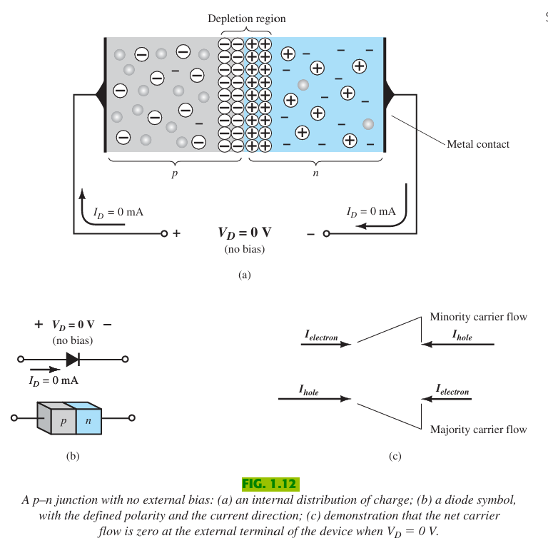
2. Open-Circuit Equilibrium & Depletion Layer Derivation
A. Formation of the Depletion Region
When the P-type and N-type regions meet, a steep carrier concentration gradient exists across the junction:
Majority Carrier Diffusion: Free electrons diffuse from the N-side into the P-side, while holes diffuse from the P-side into the N-side.
Recombination & Uncompensated Ions: Near the metallurgical junction, diffusing electrons recombine with holes, exposing immobile positive donor ions (\(N_{D}^{+}\)) on the N-side and immobile negative acceptor ions (\(N_{A}^{-}\)) on the P-side.
Depletion Layer (\(W\)): This narrow boundary region, stripped of mobile charge carriers, is called the depletion region (or space-charge layer), typically \(\approx 0.5,\mu\text{m}\) wide.
Built-in Barrier Potential (\(V_{0}\)): The uncovered immobile ions establish an internal electric field \(\overrightarrow{E}\) directed from the N-side to the P-side. This field creates a drift current of minority carriers that opposes majority carrier diffusion until dynamic equilibrium is established (\(I_{D} = 0A\)).
Contact Potential (\(V_{0}\)) Values at \(300K\):
Germanium (Ge): \(V_{0} \approx 0.3V\)
Silicon (Si): \(V_{0} \approx 0.7V - 0.72V\)
Gallium Arsenide (GaAs): \(V_{0} \approx 1.2V\)
B. Quantitative Derivation of Depletion Width (\(W\))
Using Poisson's 1-D Equation for an abrupt (step-graded) PN junction:
\(\frac{d^{2}V}{dx^{2}} = - \frac{\rho(x)}{\varepsilon_{0}\varepsilon_{r}}\)
Where \(\varepsilon_{0}\varepsilon_{r} = \varepsilon\) is the permittivity of the semiconductor material.
Step 1: Charge Density Distribution
For an abrupt step junction with boundaries \(- X_{1} \leq x \leq 0\) on the P-side and \(0 \leq x \leq X_{2}\) on the N-side:
\(\rho(x) = - qN_{A}( - X_{1} < x < 0)\)
\(\rho(x) = + qN_{D}(0 < x < X_{2})\)
Step 2: Integration on P-Side
\(\frac{d^{2}V}{dx^{2}} = \frac{qN_{A}}{\varepsilon_{0}\varepsilon_{r}}\)
Integrating once with boundary condition \(\frac{dV}{dx} = 0\) at \(x = - X_{1}\):
\(\frac{dV}{dx} = \frac{qN_{A}}{\varepsilon_{0}\varepsilon_{r}}(x + X_{1})\)
Integrating a second time with boundary condition \(V = 0\) at \(x = 0\):
\(V_{1} = - \frac{qN_{A}}{2\varepsilon_{0}\varepsilon_{r}}X_{1}^{2}(atx = - X_{1})\)
Step 3: Integration on N-Side
Similarly, for the N-side boundary at \(x = X_{2}\):
\(V_{2} = \frac{qN_{D}}{2\varepsilon_{0}\varepsilon_{r}}X_{2}^{2}(atx = X_{2})\)
Step 4: Total Built-In Potential (\(V_{0}\))
\(V_{0} = V_{2} - V_{1} = \frac{q}{2\varepsilon_{0}\varepsilon_{r}}\left( N_{A}X_{1}^{2} + N_{D}X_{2}^{2} \right)\)
By global charge neutrality, \(q N_A |X_1| = q N_D X_2 \implies X_1 = -X_2 \left(\frac{N_D}{N_A}\right)\). Substituting gives:
\(|X_{1}| = \left\lbrack \frac{2\varepsilon_{0}\varepsilon_{r}V_{0}}{qN_{A}\left( 1 + \frac{N_{A}}{N_{D}} \right)} \right\rbrack^{1/2},X_{2} = \left\lbrack \frac{2\varepsilon_{0}\varepsilon_{r}V_{0}}{qN_{D}\left( 1 + \frac{N_{D}}{N_{A}} \right)} \right\rbrack^{1/2}\)
Step 5: Total Depletion Layer Width (\(W\))
Summing the penetration depths \(W = X_{2} - X_{1}\):
\(W = \left\lbrack \frac{2\varepsilon_{0}\varepsilon_{r}V_{0}}{q}\left( \frac{N_{A} + N_{D}}{N_{A}N_{D}} \right) \right\rbrack^{1/2}\)
Abrupt Junction: \(W \propto (V_{0})^{1/2}\).
Linearly Graded Junction: \(W \propto (V_{0})^{1/3}\).
3. Diode Biasing Modes & Operation
A. Forward Bias (\(V_{D} > 0V\))
Polarity: Positive terminal of external supply to P-side (Anode), negative terminal to N-side (Cathode).
Mechanism:
External field opposes the internal built-in field, pushing holes and electrons toward the junction.
The potential barrier height reduces to \((V_{0} - V_{F})\) and the depletion width \(W\) narrows significantly.
Current Flow: Once applied forward voltage exceeds cut-in voltage (\(V_{K} \approx 0.7V\) for Si, \(0.3V\) for Ge), majority carriers cross the junction in large numbers, establishing an exponential forward current \(I_{F}\).
B. Reverse Bias (\(V_{D} < 0V\))
Polarity: Positive terminal of external supply to N-side (Cathode), negative terminal to P-side (Anode).
Mechanism:
External field aids internal field, pulling majority carriers away from junction.
Depletion region widens: \(W \propto\).
Current Flow: Barrier height increases to \((V_{0} + V_{R})\), reducing majority carrier current to zero. Only a small reverse saturation current \(I_{S}\) (or \(I_{0}\)) flows, caused by thermally generated minority carriers swept across the junction. \(I_{S}\) doubles roughly every \(10^\circ\text{C}\) rise in temperature.
Figure
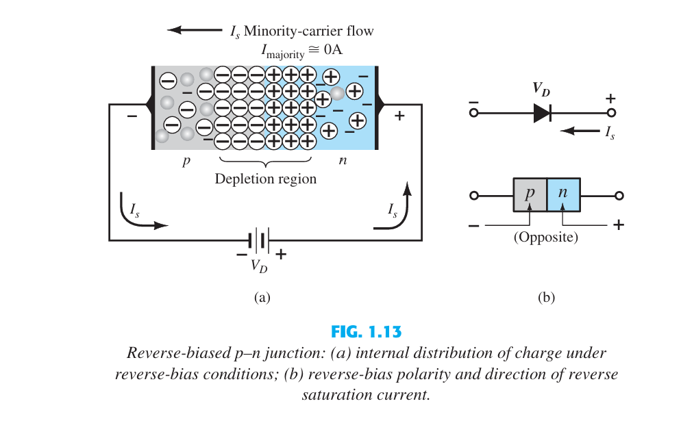
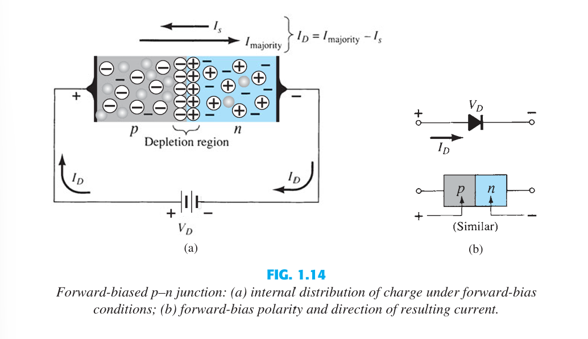
4. V-I Characteristics
A. Shockley Diode Equation
The complete current-voltage relationship for forward and reverse bias is:
\(I_{D} = I_{S}\left( e^{\frac{V_{D}}{\eta V_{T}}} - 1 \right)\)
Where:
\(I_{D}\) = Total diode terminal current
\(I_{S}\) = Reverse saturation current
\(V_{D}\) = Applied terminal voltage
\(\eta\) = Ideality factor (\(\eta = 1\) for Ge, \(\eta = 2\) for Si at low currents, \(\eta = 1\) at high currents)
\(V_{T}\) = Thermal voltage / volt-equivalent of temperature:
\(V_{T} = \frac{k \cdot T}{q} = \frac{T}{11600}\)
(At room temperature \(T = 300K\), \(V_{T} \approx 26mV\)).
Asymptotic Approximations:
Forward Bias (\(V_{D} \gg V_{T}\)): \(I_{D} \approx I_{S}e^{\frac{V_{D}}{\eta V_{T}}}\) (exponential growth).
Reverse Bias (\(V_{D} < 0V\)): \(e^{\frac{V_D}{\eta V_T}} \to 0 \implies I_D \approx -I_S\) (constant saturation leakage).
B. Dynamic (AC) Resistance Derivation (\(r_{d}\))
Dynamic resistance is defined as the inverse of the derivative of the V-I curve at the operating \(Q\)-point:
\(\frac{dI_{D}}{dV_{D}} = \frac{d}{dV_{D}}\left\lbrack I_{S}\left( e^{\frac{V_{D}}{\eta V_{T}}} - 1 \right) \right\rbrack = \frac{I_{S}}{\eta V_{T}}e^{\frac{V_{D}}{\eta V_{T}}} = \frac{I_{D} + I_{S}}{\eta V_{T}}\)
Since \(I_{D} \gg I_{S}\) under forward conduction:
\(\frac{dI_{D}}{dV_{D}} \approx \frac{I_{D}}{\eta V_{T}}\)
Inverting to find \(r_{d} = \frac{dV_{D}}{dI_{D}}\):
\(r_{d} = \frac{\eta V_{T}}{I_{D}}\)
For \(\eta = 1\) at \(T = 300K\) (\(V_{T} = 26mV\)):
\(r_{d} = \frac{26mV}{I_{D}}\)
C. Reverse Breakdown Mechanisms
If reverse bias voltage reaches a critical value called Breakdown Voltage (\(V_{BD}\) or \(V_{BR}\)), current increases sharply:
Avalanche Breakdown:
Occurs in lightly doped junctions with wide depletion regions (\(V_{BD} > 5V\)).
High electric field accelerates minority carriers to high kinetic energies (\(W_{K} = \frac{1}{2}mv^{2}\)).
Collisions with crystal lattice release bound valence electrons via impact ionization, creating carrier multiplication.
Possesses a positive temperature coefficient.
Zener Breakdown:
Occurs in heavily doped junctions with very narrow depletion regions (\(V_{BD} < 5V\)).
High intense electric field (\(\sim 3 \times 10^{7}V/m\)) directly breaks covalent bonds, tunneling electrons into the conduction band.
Possesses a negative temperature coefficient.
Figure
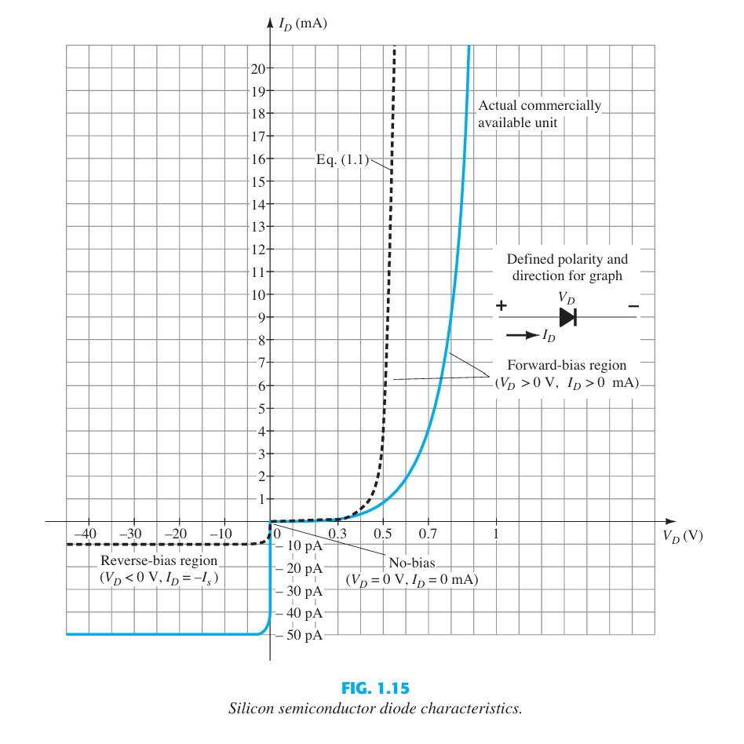
5. Diode Capacitances (Transition & Diffusion)
At high frequencies, capacitive storage effects appear in parallel with the diode.
A. Transition Capacitance (\(C_{T}\)) / Space-Charge Capacitance
Dominant Region: Reverse Bias.
Physical Cause: The widening depletion region acts as an insulating dielectric separating two layers of immobile space charges (\(N_{D}^{+}\) and \(N_{A}^{-}\)), creating a parallel-plate capacitive effect.
Mathematical Derivation:
By definition:
\(C_{T} = \left| \frac{dQ}{dV} \right|\)
Uncompensated charge \(Q\) on P-side of area \(A\):
\(Q = qN_{A}AW_{p}\)
Differentiating \(Q\) with respect to reverse voltage \(V\):
\(C_{T} = qN_{A}A\frac{dW}{dV}\)
From Poisson's voltage solution \(W = \left\lbrack \frac{2\varepsilon_{0}\varepsilon_{r}(V_{0} + V_{R})}{q}\left( \frac{N_{A} + N_{D}}{N_{A}N_{D}} \right) \right\rbrack^{1/2}\), differentiating \(W\) yields \(\frac{dW}{dV} = \frac{\varepsilon}{qN_{A}W}\). Substituting back gives:
\(C_{T} = \frac{\varepsilon_{0}\varepsilon_{r}A}{W}\)
Expressed in terms of zero-bias capacitance \(C(0)\) and applied reverse bias \(V_{R}\):
\(C_{T} = \frac{C(0)}{\left( 1 + \frac{V_{R}}{V_{K}} \right)^{n}}\)
\(n = 1/2\) for abrupt/alloy junctions
\(n = 1/3\) for linearly graded junctions
B. Diffusion Capacitance (\(C_{D}\)) / Storage Capacitance
Dominant Region: Forward Bias.
Physical Cause: Injected minority charge stored in quasi-neutral regions just outside the depletion boundaries.
Mathematical Derivation:
Excess minority hole charge \(Q\) stored on the N-side:
\(Q = Aqp_{n}(0)e^{- x/L_{p}}dx = L_{p}Aqp_{n}(0)\)
Hole diffusion current at the junction boundary (\(x = 0\)): \[I = A q D_p \frac{p_n(0)}{L_p} \implies p_n(0) = \frac{I L_p}{A q D_p}\]
Substituting \(p_{n}(0)\) into charge \(Q\):
\(Q = L_{p}Aq\left( \frac{IL_{p}}{AqD_{p}} \right) = \left( \frac{L_{p}^{2}}{D_{p}} \right)I = \tau_{p} \cdot I\)
(where \(\tau_{p} = \frac{L_{p}^{2}}{D_{p}}\) is the minority carrier lifetime).
Differentiating \(Q\) with respect to applied forward voltage \(V\):
\(C_{D} = \frac{dQ}{dV} = \frac{d}{dV}(\tau_{p} \cdot I) = \tau_{p}\frac{dI}{dV}\)
Since dynamic conductance \(g = \frac{dI}{dV} = \frac{I_{D}}{\eta V_{T}}\):
\(C_{D} = \tau_{p} \cdot g = \frac{\tau_{p} \cdot I_{D}}{\eta V_{T}}\)
Frequency Dependence of \(C_{D}\):
Low Frequency: \(C_{D} = \frac{\tau_{p} \cdot g}{2}\)
High Frequency: \(C_{D} = g\left( \frac{\tau_{p}}{2\omega} \right)^{1/2}\)
Figure
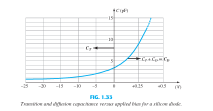
6. Diode Models & Equivalent Circuits
| Model Type | Schematic Circuit | Mathematical Condition | Typical Application |
|---|---|---|---|
| Piecewise-Linear Model | Battery \(V_{K}\) + Resistor \(r_{av}\) + Ideal Diode | \(V_{D} = V_{K} + I_{D}r_{av}\) | Precise AC signal analysis |
| Simplified Model | Battery \(V_{K}\) + Ideal Diode | \(V_{D} = V_{K} = 0.7V(Si)\) | Standard electronic circuit analysis |
| Ideal Model | Ideal Diode Switch | \(V_{D} = 0V,I_{D} > 0(ON)\); \(I_{D} = 0(OFF)\) | High-voltage power supplies / rectifiers |
Bipolar Junction Transistor (BJT)
A Bipolar Junction Transistor (BJT) is a three-terminal semiconductor device formed by sandwiching a thin, lightly doped region of one semiconductor material between two heavily and moderately doped regions of the opposite type1.
Transistor Terminals & Doping Profile:
Emitter (\(E\)): Heavily doped to inject majority charge carriers into the base region1.
Base (\(B\)): Lightly doped and physically thin to ensure injected carriers pass through with minimal recombination1.
Collector (\(C\)): Moderately doped and physically larger to handle power dissipation1.
Common-Base Current Gain (\(\alpha\)): The ratio of collector majority current to total emitter current67:
Common-Emitter Current Gain (\(\beta\) or \(h_{FE}\)): The ratio of collector current to base current89:
Common-Collector Current Gain (\(\gamma\)): The ratio of output emitter current to input base current1011:
Derivation of \(\beta\) in terms of \(\alpha\): Starting with the general active-region current equation including reverse leakage current \(I_{CBO}\)6:
Equating coefficients with \(I_{C} = \beta I_{B} + I_{CEO}\) yields68:
Derivation of \(\alpha\) in terms of \(\beta\): Dividing \(I_{E} = I_{C} + I_{B}\) by \(I_{C}\) gives1112: $$\frac{I_E}{I_C} = 1 + \frac{I_B}{I_C} \implies \frac{1}{\alpha} = 1 + \frac{1}{\beta} = \frac{\beta + 1}{\beta}$$ Inverting both sides1112:
Derivation of \(\gamma\) in terms of \(\alpha\) and \(\beta\): Using \(\Delta I_{E} = \Delta I_{C} + \Delta I_{B}\)11:
Relationship Between Leakage Currents (\(I_{CEO}\) and \(I_{CBO}\)): \(I_{CBO}\) is the collector-to-base leakage current with the emitter open613. \(I_{CEO}\) is the collector-to-emitter leakage current with the base open (\(I_{B} = 0\))68.
Substituting \(\frac{1}{1 - \alpha} = \beta + 1\)812:
Input Characteristics (\(I_{E}\) vs. \(V_{BE}\) for constant \(V_{CB}\)):
Resembles a forward-biased diode curve.
As reverse voltage \(V_{CB}\) increases, the depletion layer widens (base-width modulation), lowering effective base width, which causes \(I_{E}\) to rise faster for a given \(V_{BE}\)
Exhibits very low input resistance (\(R_{in} \approx 20\Omega - 100\Omega\)).
Output Characteristics (\(I_{C}\) vs. \(V_{CB}\) for constant \(I_{E}\)):
Active Region: Curves are nearly horizontal; \(I_{C} \approx I_{E}\) regardless of \(V_{CB}\).
Cutoff Region: Defined by \(I_{E} = 0A\), where \(I_{C} = I_{CBO} \approx 0A\)4more_horiz.
Saturation Region: Occurs where \(V_{CB} < 0V\) (forward-biasing CB junction), causing \(I_{C}\) to drop sharply to zero.
Exhibits high output resistance (\(R_{out} \approx 450k\Omega\)).
Input Characteristics (\(I_{B}\) vs. \(V_{BE}\) for constant \(V_{CE}\)):
For \(V_{CE} = 0V\), the base-emitter acts as a forward-biased PN junction.
When \(V_{CE}\) increases (\(V_{CE} > 0V\)), reverse bias on the CB junction widens the depletion layer, shrinking effective base width17. Fewer minority carriers recombine in the base, causing \(I_{B}\) to drop for a given \(V_{BE}\) (shifting curves to the right).
Exhibits moderate input resistance (\(R_{in} \approx 750\Omega - 1.5k\Omega\)).
Output Characteristics (\(I_{C}\) vs. \(V_{CE}\) for constant \(I_{B}\)):
Active Region: \(I_{C} = \beta I_{B} + I_{CEO}\)817. Curves exhibit a small upward slope due to the Early Effect (base-width modulation).
Saturation Region: Occurs when \(V_{CE} < V_{CE,sat} \approx 0.2V\), where both junctions become forward-biased and \(I_{C}\) depends on external circuit resistance.
Cutoff Region: Defined by \(I_{B} = 0A\), leaving only small leakage current \(I_{C} = I_{CEO}\)8more_horiz.
Analytical Derivation of CE Output Characteristics: Using the Ebers-Moll logarithmic equations for terminal junction voltages:
Input Characteristics (\(I_{B}\) vs. \(V_{BC}\) for constant \(V_{EC}\)):
Plot of base current \(I_{B}\) against collector-base voltage \(V_{BC}\).
Exhibits very high input resistance (\(R_{in} \approx 750k\Omega\)).
Output Characteristics (\(I_{E}\) vs. \(V_{EC}\) for constant \(I_{B}\)):
Practically identical in shape to CE output characteristics, except the vertical axis represents emitter current \(I_{E}\) and horizontal axis represents \(V_{EC}\)more_horiz.
Exhibits very low output resistance (\(R_{out} \approx 25\Omega\)).
Input Impedance (\(h_{ie}\)): \(h_{ie} = \left.\frac{\partial v_b}{\partial i_b}\right|_{v_c = 0} \quad [\Omega]\)
Reverse Voltage Transfer Ratio (\(h_{re}\)): \(h_{re} = \left.\frac{\partial v_b}{\partial v_c}\right|_{i_b = 0} \quad [\text{dimensionless}]\)
Forward Current Gain (\(h_{fe}\)): \(h_{fe} = \left.\frac{\partial i_c}{\partial i_b}\right|_{v_c = 0} \quad [\text{dimensionless}]\)
Output Admittance (\(h_{oe}\)): \(h_{oe} = \left.\frac{\partial i_c}{\partial v_c}\right|_{i_b = 0} \quad [\text{S or }\mu\text{S}]\)
Fundamental Terminal Current Equation: Applying Kirchhoff's Current Law (KCL) to the transistor terminals yields1:
\(I_{E} = I_{C} + I_{B}\)
where \(I_{E}\) is the total emitter current, \(I_{C}\) is the collector current, and \(I_{B}\) is the base current1.
Junction Biasing & Operational Regions: The behavior of a BJT depends on the biasing applied across its Base-Emitter (BE) and Collector-Base (CB) junctions23:
| Operating Region | Base-Emitter Junction | Collector-Base Junction | Primary Circuit Application |
|---|---|---|---|
| Active / Linear | Forward-Biased (\(V_{BE} \approx 0.7V\)) | Reverse-Biased (\(V_{CB} > 0V\)) | Linear Voltage/Current Amplification24 |
| Cutoff | Reverse-Biased (\(V_{BE} \leq 0V\)) | Reverse-Biased (\(V_{CB} > 0V\)) | Open Switch (\(I_{C} \approx I_{CEO} \approx 0A\))35 |
| Saturation | Forward-Biased (\(V_{BE} > 0V\)) | Forward-Biased (\(V_{CB} \leq 0V\)) | Closed Switch (\(V_{CE,sat} \approx 0.2V\))35 |
2. Current Amplification Factors (\(\alpha,\beta,\gamma\)) & Leakage Current Derivations
A. Parameter Definitions
\(\alpha = \frac{I_{C}}{I_{E}}\)
Typical values range from \(0.90\) to \(0.998\)67.
\(\beta = \frac{I_{C}}{I_{B}}\)
Typical values range from \(50\) to \(400\)9.
\(\gamma = \frac{\Delta I_{E}}{\Delta I_{B}}\)
B. Step-by-Step Derivations of Inter-Parameter Relationships
\(I_{C} = \alpha I_{E} + I_{CBO}\)
Substituting \(I_{E} = I_{C} + I_{B}\) into the equation6:
\(I_{C} = \alpha(I_{C} + I_{B}) + I_{CBO}\)
\(I_{C}(1 - \alpha) = \alpha I_{B} + I_{CBO}\)
\(I_{C} = \left( \frac{\alpha}{1 - \alpha} \right)I_{B} + \frac{I_{CBO}}{1 - \alpha}\)
\(\beta = \frac{\alpha}{1 - \alpha}\)
\(\alpha = \frac{\beta}{\beta + 1}\)
\(\gamma = \frac{\Delta I_{E}}{\Delta I_{B}} = \frac{\Delta I_{C} + \Delta I_{B}}{\Delta I_{B}} = \frac{\Delta I_{C}}{\Delta I_{B}} + 1\)
\(\gamma = \beta + 1\)
Substituting \(\beta = \frac{\alpha}{1 - \alpha}\) into \(\gamma = \beta + 1\)11: $$\gamma = \frac{\alpha}{1 - \alpha} + 1 = \frac{\alpha + (1 - \alpha)}{1 - \alpha} \implies \mathbf{\gamma = \frac{1}{1 - \alpha}}$$
\(I_{CEO} = \frac{I_{CBO}}{1 - \alpha}\)
\(I_{CEO} = (1 + \beta)I_{CBO} \approx \beta I_{CBO}\)
This demonstrates that collector-to-emitter leakage current in the CE configuration is \((1 + \beta)\) times larger than in the CB configuration814.
3. BJT Configurations & Input/Output Characteristics
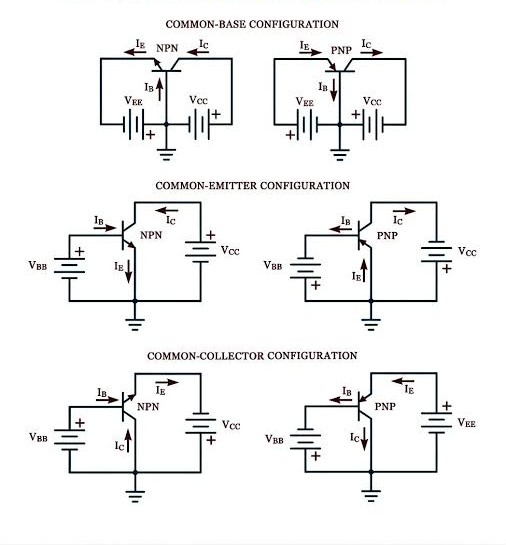
A. Common-Base (CB) Configuration
B. Common-Emitter (CE) Configuration
\(V_{C} = V_{T}\ln\left( 1 - \frac{\alpha_{N}I_{E} + I_{C}}{I_{CO}} \right),V_{E} = V_{T}\ln\left( 1 - \frac{\alpha_{I}I_{C} + I_{E}}{I_{EO}} \right)\)
Subtracting \(V_{E}\) from \(V_{C}\) to obtain \(V_{CE} = V_{C} - V_{E}\):
\(V_{CE} = V_{T}\ln\left( \frac{I_{CO} - \alpha_{N}I_{E} - I_{C}}{I_{CO}} \right) - V_{T}\ln\left( \frac{I_{EO} - \alpha_{I}I_{C} - I_{E}}{I_{EO}} \right)\)
\(V_{CE} = V_{T}\ln\left\lbrack \left( \frac{I_{CO} - \alpha_{N}I_{E} - I_{C}}{I_{EO} - \alpha_{I}I_{C} - I_{E}} \right)\left( \frac{I_{EO}}{I_{CO}} \right) \right\rbrack\)
Using reciprocity \(\frac{I_{EO}}{I_{CO}} = \frac{\alpha_{I}}{\alpha_{N}}\) and substituting \(I_{E} = - (I_{B} + I_{C})\):
\(V_{CE} = V_{T}\ln\left\lbrack \frac{I_{CO} + \alpha_{N}I_{B} + \alpha_{N}I_{C} - I_{C}}{I_{EO} - \alpha_{I}I_{C} + I_{B} + I_{C}} \cdot \frac{\alpha_{I}}{\alpha_{N}} \right\rbrack = V_{T}\ln\left( \frac{\alpha_{I}}{\alpha_{N}} \right) + V_{T}\ln\left\lbrack \frac{I_{CO} + \alpha_{N}I_{B} - I_{C}(1 - \alpha_{N})}{I_{EO} + I_{B} + I_{C}(1 - \alpha_{I})} \right\rbrack\)
Dividing numerator and denominator by \(I_{B}\) and introducing forward/reverse beta (\(\beta_{N} = \frac{\alpha_{N}}{1 - \alpha_{N}},\beta_{I} = \frac{\alpha_{I}}{1 - \alpha_{I}}\)) yields:
\(V_{CE} = - V_{T}\ln\left\lbrack \frac{\frac{1}{\alpha_{I}} + \frac{1}{\beta_{I}}\left( \frac{I_{C}}{I_{B}} \right)}{1 - \frac{1}{\beta_{N}}\left( \frac{I_{C}}{I_{B}} \right)} \right\rbrack\)
C. Common-Collector (CC) / Emitter-Follower Configuration
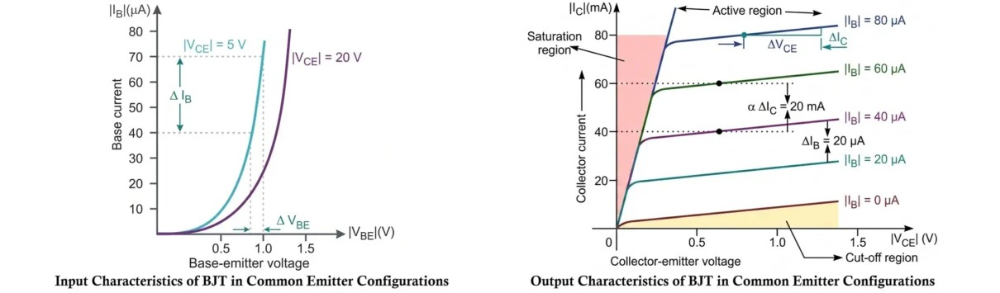
4. Small-Signal Models & Parameter Derivations
Under small-signal conditions (\(v_{be} \ll V_{T} \approx 26mV\) at room temperature), BJT operation around the quiescent operating point (\(Q\)-point) is linearized using small-signal parameters.
A. Fundamental Small-Signal Parameters
Transconductance (\(g_{m}\)): The derivative of collector current with respect to base-emitter voltage25: $$\mathbf{g_m = \frac{\partial i_C}{\partial v_{BE}}\Bigg|_{I_{CQ}} = \frac{I_{CQ}}{V_T}}$$
Base Input Resistance (\(r_{\pi}\) or \(h_{ie}\)): The small-signal resistance looking into the base terminal:
\(r_{\pi} = h_{ie} = \frac{\beta}{g_{m}} = \frac{\beta V_{T}}{I_{CQ}} = \beta r_{e}\)
Emitter AC Resistance (\(r_{e}\) or \(h_{ib}\)): The dynamic resistance of the forward-biased base-emitter diode24more_horiz:
\(r_{e} = h_{ib} = \frac{V_{T}}{I_{EQ}} \approx \frac{26mV}{I_{E}(mA)}\)
Output Resistance (\(r_{o}\) or \(1/h_{oe}\)): Accounts for the Early Voltage (\(V_{A}\)) causing finite output resistance:
\(r_{o} = \frac{1}{h_{oe}} = \frac{V_{A}}{I_{CQ}}\)
B. Two-Port Hybrid (\(h\)) Parameter Definitions
From Taylor series linearization of \(v_{b} = f_{1}(i_{b},v_{c})\) and \(i_{c} = f_{2}(i_{b},v_{c})\)28:
\(v_{b} = h_{ie}i_{b} + h_{re}v_{c}\)
\(i_{c} = h_{fe}i_{b} + h_{oe}v_{c}\)
C. Parameter Conversion Matrix (\(h\)-Parameter $\longleftrightarrow r_e$ / Hybrid-\(\pi\) Model)
| Parameter | Common-Emitter (CE) | Common-Base (CB) | Common-Collector (CC) |
|---|---|---|---|
| Input Resistance | \(h_{ie} = \beta r_{e} = r_{\pi}\) | \(h_{ib} = r_{e} = \frac{h_{ie}}{1 + h_{fe}}\) | \(h_{ic} = h_{ie} = \beta r_{e}\) |
| Forward Current Gain | \(h_{fe} = \beta\) | \(h_{fb} = - \alpha = - \frac{h_{fe}}{1 + h_{fe}}\) | \(h_{fc} = - (1 + \beta)\) |
| Reverse Voltage Gain | \(h_{re} \approx \frac{h_{ib}h_{ob}}{1 + h_{fb}} - h_{rb}\) | \(h_{rb} \approx \frac{h_{ie}h_{oe}}{1 + h_{fe}} - h_{re}\) | \(h_{rc} = 1\) |
| Output Admittance | \(h_{oe} = \frac{1}{r_{o}}\) | \(h_{ob} = \frac{h_{oe}}{1 + h_{fe}}\) | \(h_{oc} = h_{oe} = \frac{1}{r_{o}}\) |
5. Comparative Summary Matrix of BJT Configurations
| Performance Metric | Common-Emitter (CE) | Common-Base (CB) | Common-Collector (CC) |
|---|---|---|---|
| Input Terminal | BasE | Emitter | Base |
| Output Terminal | Collector | Collector | Emitter |
| Input Resistance (\(R_{in}\)) | Moderate (\(\approx 750\Omega - 1.5k\Omega\)) | Low (\(\approx 20\Omega - 100\Omega\)) | High (\(\approx 750k\Omega\)) |
| Output Resistance (\(R_{out}\)) | Moderate (\(\approx 40k\Omega - 50k\Omega\)) | High (\(\approx 450k\Omega - 2M\Omega\)) | Low (\(\approx 25\Omega\)) |
| Voltage Gain (\(A_{v}\)) | High (\(A_{v} \approx - g_{m}R_{C} \approx - \frac{R_{C}}{r_{e}}\)) | High (\(A_{v} \approx + g_{m}R_{C} \approx + \frac{R_{C}}{r_{e}}\)) | Unity (\(A_{v} \approx 1,A_{v} < 1\))1027 |
| Current Gain (\(A_{i}\)) | High (\(A_{i} = \beta \approx 50 - 400\)) | Low / Unity (\(A_{i} = \alpha \approx 0.98\)) | High (\(A_{i} = \gamma = 1 + \beta\)) |
| Phase Shift | \(180^{\circ}\) (Inverting) | \(0^{\circ}\) (Non-inverting) | \(0^{\circ}\) (Non-inverting) |
| Primary Circuit Function | Audio & General Voltage Amplification | High-Frequency RF Amplifiers | Impedance Matching / Unity Buffer |
Field-Effect Transistors (JFET & MOSFET)
Field-Effect Transistor (FET): Technical Study Notes & Derivations
A Field-Effect Transistor (FET) is a three-terminal, voltage-controlled semiconductor device in which current flow through a conducting channel is regulated by an applied transverse electric field. Unlike Bipolar Junction Transistors (BJTs), which are current-controlled and unipolar/bipolar depending on majority/minority carrier action, FETs operate strictly as unipolar devices where conduction depends solely on one type of charge carrier (electrons in N-channel devices or holes in P-channel devices).
1. Major Classification & Types of FETs
Field-Effect Transistors are categorized based on their internal structure, gate insulation mechanism, and channel formation mode:
General Comparison: FET vs. BJT
Input Impedance: FETs possess extremely high input resistance (\(R_{i} \approx 10^{7}\,\Omega - 10^{12}\,\Omega\) for JFETs, \(R_{i} > 10^{10}\,\Omega - 10^{15}\,\Omega\) for MOSFETs) due to reverse-biased gate junctions or insulating \(\text{SiO}_2\) layers, whereas BJTs have moderate input resistance (\(r_\pi \approx 1\,\text{k}\Omega - 10\,\text{k}\Omega\)).
Gate/Input Current: \(I_{G} \approx 0\,\text{A}\) for FETs, whereas BJT base current \(I_{B} = I_{C}/\beta \neq 0\,\text{A}\).
Thermal Stability & Size: FETs offer superior thermal stability, lower noise figures, and smaller physical footprints on integrated circuits (ICs).
2. Junction Field-Effect Transistor (JFET)
A. Physical Structure & Terminals
Drain (\(D\)): Terminal connected to the upper end of the N-type (or P-type) semiconductor channel through an ohmic contact.
Source (\(S\)): Terminal connected to the lower end of the channel.
Gate (\(G\)): Terminal formed by connecting the two embedded \(P^{+}\)-type (or \(N^{+}\)-type) regions surrounding the channel.
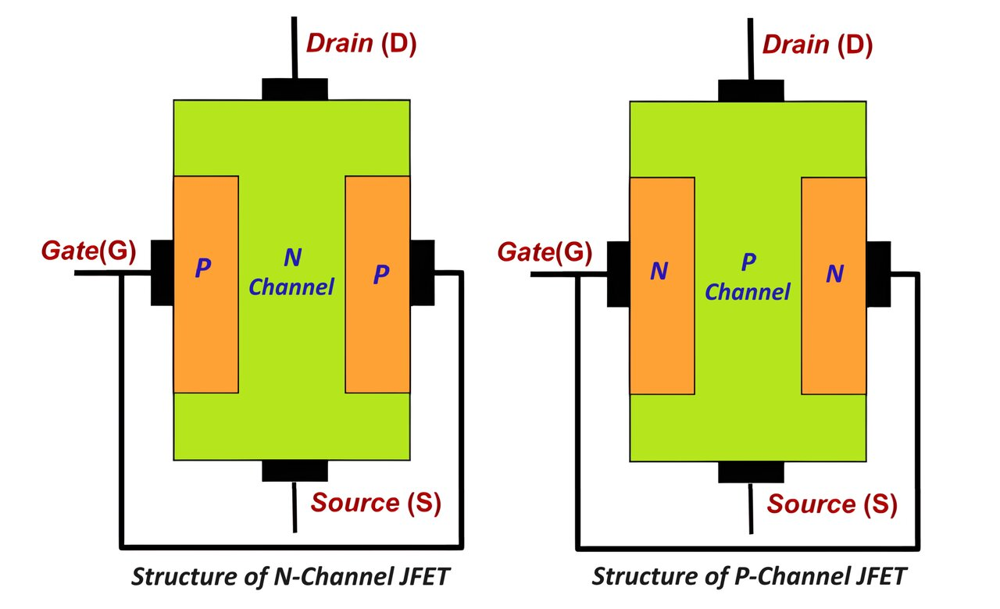
B. Working Principle & Pinch-Off Mechanism
Unbiased State (\(V_{GS} = 0V,V_{DS} = 0V\)):
Two symmetrical \(P\)-\(N\) junctions exist with narrow, uniform depletion regions void of free carriers.
Ohmic / Linear Region (\(V_{GS} = 0V,0 < V_{DS} < |V_{P}|\)):
Applying a positive \(V_{DS}\) draws electrons from source to drain, establishing drain current \(I_{D} = I_{S}\).
Because current \(I_{D}\) flows through the resistive channel, a continuous potential drop \(V(x)\) develops along the channel length.
This creates a larger reverse bias across the \(P\)-\(N\) junction near the drain end than at the source end. Consequently, the depletion region widens non-uniformly toward the drain end, narrowing the conducting channel.
Pinch-Off Condition (\(V_{GS} = 0V,V_{DS} = V_{P}\)):
As \(V_{DS}\) reaches the Pinch-Off Voltage (\(V_{P}\)), the depletion regions approach near-contact at the drain end.
Current does not drop to zero; instead, it saturates at its maximum level: \(I_{DSS}\) (Drain-to-Source Saturation Current). A high-velocity, high-density carrier stream flows through the narrow pinch-off constriction.
Voltage Control via \(V_{GS}\) (\(V_{GS} < 0V\) for N-Channel):
Applying a negative gate-to-source voltage \(V_{GS}\) further reverse-biases the gate junction.
This artificially narrows the channel before \(V_{DS}\) is applied, causing pinch-off to occur at lower values of \(V_{DS}\) (\(V_{DS,sat} = V_{GS} - V_{P}\)).
When \(V_{GS} = V_{P}\) (where \(V_{P}\) is negative for N-channel, positive for P-channel), the channel is completely depleted, reducing drain current to zero (\(I_{D} = 0A\)).
C. Derivation of Pinch-Off Voltage (\(V_{P}\)) & Depletion Width
Using 1-D Poisson's Equation in the space-charge region of a single-ended abrupt junction (where acceptor doping density \(N_{A} \gg N_{D}\), causing the depletion region to extend almost entirely into the N-channel):
\(\frac{d^{2}V}{dx^{2}} = - \frac{\rho(x)}{\varepsilon} = - \frac{qN_{D}}{\varepsilon}\)
Step 1: First Integration for Electric Field
Integrating with boundary condition \(\frac{dV}{dx} = 0\) at the depletion edge \(x = W\):
\(\frac{dV}{dx} = - \frac{qN_{D}}{\varepsilon}(x - W)\)
Step 2: Second Integration for Electrostatic Potential
Integrating again with boundary condition \(V(0) = 0\) at the \(P^{+}\) boundary:
\(V(x) = - \frac{qN_{D}}{2\varepsilon}(x^{2} - 2Wx)\)
At the depletion layer edge \(x = W\), the total barrier potential \(V_{B}\) across the junction is:
\(V_{B} = \frac{qN_{D}W^{2}}{2\varepsilon}\)
Step 3: Expression for Pinch-Off Voltage (\(V_{P}\))
Pinch-off occurs when the depletion width \(W\) equals the metallurgical channel width \(a\) (\(W = a\)):
\(|V_{P}| = \frac{qN_{D}a^{2}}{2\varepsilon}\)
Step 4: Depletion Width as a Function of Applied Voltage
Substituting \(a - h(x) = W(x)\) (where \(h(x)\) is the un-depleted channel half-width at distance \(x\)):
\(a - h(x) = \left\lbrack \frac{2\varepsilon}{qN_{D}}(V_{0} - V(x)) \right\rbrack^{1/2}\)
Substituting the expression for \(|V_{P}|\) yields:
\(\frac{a - h(x)}{a} = \left\lbrack \frac{V_{0} - V(x)}{V_{P}} \right\rbrack^{1/2}\)
At zero drain current (\(I_{D} = 0\)), \(V(x) = V_{GS}\), giving:
\(V_{GS} = \left( 1 - \frac{h}{a} \right)^{2}V_{P}\)
3. Governing Equations & Derivations of JFET Parameters
A. Shockley's Transfer Equation
In the saturation region (\(V_{DS} \geq V_{GS} - V_{P}\)), the relationship between drain current \(I_{D}\) and gate voltage \(V_{GS}\) is given by:
\(I_{D} = I_{DSS}\left( 1 - \frac{V_{GS}}{V_{P}} \right)^{2}\)
Key Reference Points on Shockley's Curve:
At \(V_{GS} = 0\text{ V} \implies I_D = I_{DSS}\)
At \(V_{GS} = V_P \implies I_D = 0\text{ A}\)
At \(V_{GS} = 0.5 V_P \implies I_D = \frac{I_{DSS}}{4} = 0.25,I_{DSS}\)
At \(V_{GS} = 0.3 V_P \implies I_D = \frac{I_{DSS}}{2} = 0.50,I_{DSS}\)
B. Mathematical Derivation of Transconductance (\(g_{m}\))
Transconductance \(g_{m}\) measures the sensitivity of drain current \(I_{D}\) to changes in gate-to-source voltage \(V_{GS}\) at a constant \(V_{DS}\):
\[g_m = \left. \frac{\partial I_D}{\partial V_{GS}} \right|_{V_{DS} = \text{const}}\]
Differentiating Shockley's equation with respect to \(V_{GS}\):
\(g_{m} = \frac{d}{dV_{GS}}\left\lbrack I_{DSS}\left( 1 - \frac{V_{GS}}{V_{P}} \right)^{2} \right\rbrack = 2I_{DSS}\left( 1 - \frac{V_{GS}}{V_{P}} \right) \cdot \left( - \frac{1}{V_{P}} \right)\)
\(g_{m} = \frac{2I_{DSS}}{|V_{P}|}\left( 1 - \frac{V_{GS}}{V_{P}} \right)\)
Defining the maximum transconductance at \(V_{GS} = 0V\) as \(g_{m0} = \frac{2I_{DSS}}{|V_{P}|}\):
\(g_{m} = g_{m0}\left( 1 - \frac{V_{GS}}{V_{P}} \right)\)
Derivation of \(g_{m}\) in Terms of Bias Current \(I_{D}\):
From Shockley's equation, \(\left( 1 - \frac{V_{GS}}{V_{P}} \right) =\). Substituting this into the \(g_{m}\) expression gives:
\(g_{m} = g_{m0}\)
C. Derivation of Inter-Parameter Relation (\(\mu = g_{m} \cdot r_{d}\))
Since \(I_{D} = f(V_{DS},V_{GS})\), taking the total differential yields:
\[\Delta I_D = \left( \frac{\partial I_D}{\partial V_{DS}} \right)_{V_{GS}} \Delta V_{DS} + \left( \frac{\partial I_D}{\partial V_{GS}} \right)_{V_{DS}} \Delta V_{GS}\]
Where:
Drain Resistance \(r_d = \left( \frac{\partial V_{DS}}{\partial I_D} \right)_{V_{GS}} \implies \left( \frac{\partial I_D}{\partial V_{DS}} \right)_{V_{GS}} = \frac{1}{r_d}\)
Transconductance \(g_m = \left( \frac{\partial I_D}{\partial V_{GS}} \right)_{V_{DS}}\)
Substituting these definitions into the differential equation:
\(\Delta I_{D} = \frac{1}{r_{d}}\Delta V_{DS} + g_{m}\Delta V_{GS}\)
For a constant drain current condition (\(\Delta I_{D} = 0\)):
\[0 = \frac{1}{r_d} \Delta V_{DS} + g_m \Delta V_{GS} \implies \left( -\frac{\Delta V_{DS}}{\Delta V_{GS}} \right)_{\Delta I_D = 0} = g_m \cdot r_d\]
By definition, the Amplification Factor (\(\mu\)) is \(\mu = -\left. \frac{\partial V_{DS}}{\partial V_{GS}} \right|_{I_D = \text{const}}\). Therefore:
\(\mu = g_{m} \cdot r_{d}\)
D. Voltage-Controlled Resistor (VCR) Derivation
In the low-\(V_{DS}\) Ohmic region (\(V_{DS} \ll V_{P}\)), the channel acts as a variable resistor \(r_{d}\) controlled by \(V_{GS}\):
\(r_{d} = \frac{r_{0}}{\left( 1 - \frac{V_{GS}}{V_{P}} \right)^{2}}\)
where \(r_{0}\) is the drain-to-source resistance at \(V_{GS} = 0V\).
4. Metal-Oxide-Semiconductor FET (MOSFET)
MOSFETs isolate the gate terminal from the channel using a thin insulating layer of Silicon Dioxide (\(SiO_{2}\)), resulting in zero DC gate current (\(I_{G} \approx 0A\)).
A. Depletion-Type MOSFET (D-MOSFET)
Physical Structure & Operation:
Constructed with a physical \(N\)-channel diffused into a \(P\)-type substrate (or vice versa).
Dual-Mode Operation:
Depletion Mode (\(V_{GS} < 0V\) for N-channel): Negative gate potential repels electrons into the substrate and attracts holes, promoting carrier recombination and reducing channel conductivity.
Enhancement Mode (\(V_{GS} > 0V\) for N-channel): Positive gate potential attracts additional free electrons into the channel, increasing conductivity above \(I_{DSS}\).
Governing Equation: Shockley's equation applies across both depletion and enhancement regions:
\(I_{D} = I_{DSS}\left( 1 - \frac{V_{GS}}{V_{P}} \right)^{2}(forV_{GS} > V_{P})\)
B. Enhancement-Type MOSFET (E-MOSFET)
Physical Structure & Operation:
Contains no built-in channel. Two highly doped \(N^{+}\) regions (Source and Drain) are separated by a \(P\)-type substrate beneath the \(SiO_{2}\) insulated gate.
Threshold Voltage (\(V_{T}\) or \(V_{GS(Th)}\)):
Applying a positive \(V_{GS}\) repels holes from the oxide interface, creating a depletion layer.
When \(V_{GS}\) reaches the threshold voltage \(V_{T}\), minority electrons in the \(P\)-substrate accumulate at the \(SiO_{2}\) boundary to form an Inversion Layer (\(N\)-type channel connecting source to drain).
Drain Current Equations:
Cutoff Region: \(I_{D} = 0A\) for \(V_{GS} < V_{T}\).
Ohmic / Non-Saturation Region (\(V_{DS} < V_{GS} - V_{T}\)):
\(I_{D} = K_{N}\left\lbrack 2(V_{GS} - V_{T})V_{DS} - V_{DS}^{2} \right\rbrack\)
Saturation Region (\(V_{DS} \geq V_{DS,sat} = V_{GS} - V_{T}\)):
\(I_{D} = k(V_{GS} - V_{T})^{2}\)
where \(k = \frac{I_{D(on)}}{(V_{GS(on)} - V_{T})^{2}}\) or \(K_{N} = \frac{\mu_{n}C_{ox}}{2}\left( \frac{W}{L} \right)\).
C. Derivation of Threshold Voltage (\(V_{TN}\)) in MOS Capacitor
From energy-band bending and charge distribution at the threshold inversion point:
\(V_{TN} = V_{oxT} + 2\Phi_{fp} + \Phi_{ms}\)
Where:
\(\Phi_{fp} = V_{T}\ln\left( \frac{N_{A}}{n_{i}} \right)\) is the Fermi potential of the \(P\)-substrate (with thermal voltage \(V_{T} \approx 26mV\)).
Maximum bulk depletion width \(W_{dT} = \left( \frac{2\varepsilon_{s}(2\Phi_{fp})}{qN_{A}} \right)^{1/2}\).
Maximum space-charge density \(|Q_{SD}'(max)| = qN_{A}W_{dT} =\).
Oxide voltage drop at threshold \(V_{oxT} = \frac{|Q_{SD}'(max)|}{C_{ox}'}\).
D. Channel-Length Modulation Derivation
In the saturation region (\(V_{DS} > V_{DS,sat}\)), the effective channel length decreases from \(L\) to \(L' = L - \Delta L\) as the pinch-off point moves toward the source. The modified saturation current equation is:
\(I_{D} = K_{N}(V_{GS} - V_{TN})^{2}(1 + \lambda V_{DS})\)
where \(\lambda\) is the channel-length modulation parameter (\(V^{- 1}\)).
Derivation of Small-Signal Output Resistance (\(r_{o}\) or \(r_{d}\)):
\[r_o = \left( \left. \frac{\partial I_D}{\partial V_{DS}} \right|_{V_{GS} = \text{const}} \right)^{-1} = \left[ \lambda K_N (V_{GSQ} - V_{TN})^2 \right]^{-1}\]
Since \(I_{DQ} \approx K_{N}(V_{GSQ} - V_{TN})^{2}\):
\(r_{o} = \frac{1}{\lambda I_{DQ}} = \frac{V_{E}}{I_{DQ}}\)
(where \(V_{E} = \frac{1}{\lambda}\) is equivalent to the Early Voltage in BJTs).
5. Power MOSFETs & High-Frequency Small-Signal Models
A. VMOS and UMOS (Trench) Power MOSFETs
Standard planar MOSFETs carry limited power ratings (\(< 1W\)). Power MOSFETs employ vertical current structures to increase power density (\(> 10W\), currents \(> 1A\)):
VMOS: Uses a V-shaped groove etched through \(N^{+}\), \(P\), and \(N^{-}\) layers. Vertical channels formed along the V-groove cut reduce channel resistance and provide dual conduction paths.
UMOS (Trench MOSFET): Uses rectangular U-groove trenches. Eliminates high electric fields at V-tips, offering lower ON-resistance \(R_{DS(on)}\) and higher packing density.
B. Small-Signal Equivalent Models
In high-frequency AC small-signal analysis, the FET is modeled as a voltage-controlled current source \(g_{m}v_{gs}\) in parallel with output resistance \(r_{d}\):
Small-Signal Parameters Summary:
Transconductance: \(g_m = \left. \frac{\partial I_D}{\partial V_{GS}} \right|_{Q\text{-point}} = y_{fs}\)
Drain Resistance: \(r_d = \left. \frac{\partial V_{DS}}{\partial I_D} \right|_{Q\text{-point}} = \frac{1}{y_{os}}\)
Amplification Factor: \(\mu = g_{m} \cdot r_{d}\)
6. Comparative Matrix of Field-Effect Devices
| Parameter / Feature | JFET | Depletion MOSFET (D-MOSFET) | Enhancement MOSFET (E-MOSFET) |
|---|---|---|---|
| Physical Channel | Built-in (\(N\) or \(P\)) | Built-in (\(N\) or \(P\)) | None (Induced via \(V_{GS}\)) |
| Operating Modes | Depletion Mode Only | Depletion & Enhancement Modes | Enhancement Mode Only |
| Input Resistance (\(R_{i}\)) | High (\(\sim 10^{8},\Omega\)) | Very High (\(\sim 10^{10},\Omega\)) | Extremely High (\(\sim 10^{12} - 10^{15},\Omega\)) |
| Control Equation | \(I_{D} = I_{DSS}\left( 1 - \frac{V_{GS}}{V_{P}} \right)^{2}\) | \(I_{D} = I_{DSS}\left( 1 - \frac{V_{GS}}{V_{P}} \right)^{2}\) | \(I_{D} = k(V_{GS} - V_{T})^{2}\) |
| Gate Voltage Range (\(N\)-Ch) | Negative (\(V_{P} \leq V_{GS} \leq 0\)) | Bi-directional (\(V_{P} \leq V_{GS} \leq + V_{\max}\)) | Positive Only (\(V_{GS} \geq V_{T} > 0\)) |
| Transconductance (\(g_{m}\)) | \(g_{m0}\left( 1 - \frac{V_{GS}}{V_{P}} \right)\) | \(g_{m0}\left( 1 - \frac{V_{GS}}{V_{P}} \right)\) | \(2k(V_{GS} - V_{T})\) |
| Key Applications | Low-noise RF, VCR | Dual-mode amplifiers | Digital CMOS logic, Power switching |
JFETs (Junction Field-Effect Transistors) and MOSFETs (Metal-Oxide-Semiconductor Field-Effect Transistors) are both voltage-controlled, unipolar devices where conduction is regulated by an electric field. However, they differ significantly in gate construction, operating modes, input impedance, transfer characteristics, and handling requirements.
1. Structural & Operational Comparison Matrix
| Metric / Parameter | Junction FET (JFET) | Depletion-Type MOSFET (D-MOSFET) | Enhancement-Type MOSFET (E-MOSFET) |
|---|---|---|---|
| Gate Insulation | Reverse-biased \(P - N\) junction (direct semiconductor contact) | Insulating Silicon Dioxide (\(SiO_{2}\)) layer | Insulating Silicon Dioxide (\(SiO_{2}\)) layer |
| Physical Channel | Built-in (\(N\)-channel or \(P\)-channel) | Built-in (\(N\)-channel or \(P\)-channel) | None at zero bias (Induced inversion channel) |
| Operating Modes | Depletion mode only | Dual-mode (Depletion & Enhancement) | Enhancement mode only |
| Input Impedance (\(R_{i}\)) | High (\(\approx 10^{9},\Omega\) or \(100M\Omega +\)) | Extremely High (\(\approx 10^{12},\Omega - 10^{15},\Omega\)) | Extremely High (\(\approx 10^{12},\Omega - 10^{15},\Omega\)) |
| Transfer Equation | \(I_{D} = I_{DSS}\left( 1 - \frac{V_{GS}}{V_{P}} \right)^{2}\) | \(I_{D} = I_{DSS}\left( 1 - \frac{V_{GS}}{V_{P}} \right)^{2}\) | \(I_{D} = k(V_{GS} - V_{T})^{2}\) |
| Control Voltage (\(N\)-Ch) | Negative only (\(V_{P} \leq V_{GS} \leq 0V\)) | Negative & Positive (\(V_{P} \leq V_{GS} \leq + V_{\max}\)) | Positive only (\(V_{GS} \geq V_{T} > 0V\)) |
| Sensitivity / Handling | Standard handling | High static sensitivity (requires shorting rings) | High static sensitivity (requires shorting rings) |
2. Key Technological Differences
A. Gate Construction & Input Impedance
JFET: The gate terminal is connected directly to embedded \(P\)-type (or \(N\)-type) regions, creating a \(P - N\) junction. During operation, this junction is reverse-biased, resulting in zero DC gate current (\(I_{G} \approx 0A\)) and a very high input impedance (\(\approx 10^{9},\Omega\)).
MOSFET: The gate metal contact is physically separated and isolated from the semiconductor channel by an ultra-thin Silicon Dioxide (\(SiO_{2}\)) insulating layer. This insulated-gate (IGFET) design eliminates direct semiconductor contact, raising the input impedance even higher (\(\approx 10^{12},\Omega\) to \(10^{15},\Omega\)).
B. Operating Modes & Transfer Characteristics
JFET:
Operates exclusively in depletion mode.
For an \(N\)-channel JFET, applying a negative \(V_{GS}\) expands the depletion layer, constricting the channel until drain current is cut off at \(V_{GS} = V_{P}\).
Governed by Shockley's Equation:
\(I_{D} = I_{DSS}\left( 1 - \frac{V_{GS}}{V_{P}} \right)^{2}\)
Depletion-Type MOSFET (D-MOSFET):
Operates as a dual-mode device.
Functions in depletion mode when negative \(V_{GS}\) is applied, and extends into enhancement mode when positive \(V_{GS}\) attracts additional free electrons into the physical channel, raising \(I_{D}\) above \(I_{DSS}\).
Follows Shockley's equation for both negative and positive values of \(V_{GS}\).
Enhancement-Type MOSFET (E-MOSFET):
Has no built-in channel under zero-bias conditions (\(V_{GS} = 0\text{ V} \implies I_D = 0\text{ A}\)).
Conduction begins only after \(V_{GS}\) exceeds the Threshold Voltage (\(V_{T}\) or \(V_{GS(Th)}\)), which attracts minority carriers to form an induced inversion layer.
Does not follow Shockley's equation. Its transfer curve is governed by:
\(I_{D} = k\left( V_{GS} - V_{T} \right)^{2}wherek = \frac{I_{D(on)}}{\left( V_{GS(on)} - V_{T} \right)^{2}}\)
C. Transconductance (\(g_{m}\)) Derivation
JFET & D-MOSFET: Differentiating Shockley's equation with respect to \(V_{GS}\) yields:
\(g_{m} = \frac{dI_{D}}{dV_{GS}} = g_{m0}\left( 1 - \frac{V_{GS}}{V_{P}} \right) = \frac{2I_{DSS}}{|V_{P}|}\left( 1 - \frac{V_{GS}}{V_{P}} \right)\)
(Maximum \(g_{m} = g_{m0}\) occurs at \(V_{GS} = 0V\)).
E-MOSFET: Differentiating the E-MOSFET transfer equation with respect to \(V_{GS}\) yields:
\(g_{m} = \frac{dI_{D}}{dV_{GS}} = \frac{d}{dV_{GS}}\left\lbrack k(V_{GS} - V_{T})^{2} \right\rbrack = 2k(V_{GSQ} - V_{T})\)
D. Electrostatic Sensitivity & Handling
JFETs are robust against standard electrostatic handling.
MOSFETs are extremely vulnerable to static charge accumulation. The dielectric layer of \(SiO_{2}\) is so thin that static voltages can easily cause breakdown and permanently damage the gate insulator; shorting rings or conductive shipping foil must remain attached until installation.
BJT Small-Signal Amplifiers & Frequency Response
1. Introduction to Amplifiers & Common-Emitter (CE) Configuration
A. Concept of an Amplifier
An amplifier is an electronic circuit designed to increase the magnitude of a time-varying input signal (voltage, current, or power) without distorting its fundamental waveform shape.
Role of DC Biasing: Linear AC amplification cannot occur without applying a proper DC bias. DC voltage sources (\(V_{CC}\)) establish a stable quiescent operating point (\(Q\)-point: \(I_{CQ},V_{CEQ}\)) in the active region of the transistor.
Superposition Theorem: Because the transistor operates linearly for small AC variations around the \(Q\)-point, the complete response can be separated into an independent DC bias analysis and an AC small-signal analysis.
B. Common-Emitter (CE) Amplifier Overview
The Common-Emitter (CE) configuration is the most widely utilized BJT amplifier topology because it simultaneously provides high voltage gain and high current gain, yielding the highest overall power gain among the three basic configurations (CE, CB, CC).
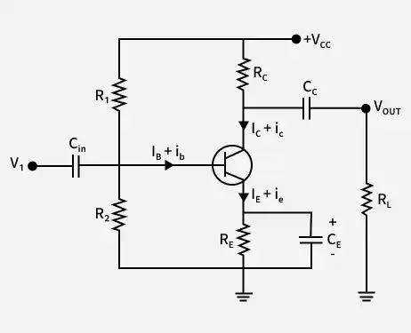
Terminal Connections: The AC input signal (\(V_{i}\)) is applied to the Base, the amplified output signal (\(V_{o}\)) is extracted from the Collector, and the Emitter is common to both input and output loops (typically connected to AC ground via an emitter bypass capacitor \(C_{E}\)).
Phase Inversion: The CE amplifier produces a \(180^{\circ}\) phase shift (inversion) between the input and output voltage waveforms. When the input voltage increases, base current increases, causing collector current to increase and the collector-to-emitter voltage drop (\(V_{o} = V_{CC} - I_{c}R_{C}\)) to decrease.
2. Fundamentals of Small-Signal Analysis
A. Small-Signal Linearization Condition
The current-voltage characteristic of a BJT's forward-biased base-emitter junction is exponential:
\(i_{C} = I_{S},e^{\frac{v_{BE}}{V_{T}}}\)
When a small AC signal \(v_{be}\) is superimposed on the DC bias \(V_{BE}\) (\(v_{BE} = V_{BE} + v_{be}\)), expanding the exponential via Taylor series around the \(Q\)-point (\(I_{CQ}\)) yields:
\(i_{C} = I_{CQ},e^{\frac{v_{be}}{V_{T}}} \approx I_{CQ}\left( 1 + \frac{v_{be}}{V_{T}} \right) = I_{CQ} + \left( \frac{I_{CQ}}{V_{T}} \right)v_{be}\)
To ensure linear operation with negligible harmonic distortion, the AC signal excursion must satisfy the small-signal condition:
\(v_{be} \ll V_{T}(V_{T} \approx 26mVatT = 300K)\)
B. Rules for Constructing the AC Small-Signal Equivalent Circuit
To isolate the AC response of a BJT amplifier, the physical circuit is reduced using the following fundamental rules:
DC Voltage Sources: All independent DC voltage sources (\(V_{CC},V_{EE}\)) are set to zero and replaced by a short-circuit connection to AC ground.
Capacitors: At midband frequencies, all external coupling capacitors (\(C_{1},C_{2}\)) and bypass capacitors (\(C_{E}\)) are replaced by short-circuit equivalents.
Parallel Elements: Any passive circuit element connected in parallel with an introduced AC short-circuit is removed from the network.
Transistor Substitution: The BJT is replaced by its linear AC small-signal equivalent model (such as the Hybrid \(h\)-parameter model or Hybrid-\(\pi\) / \(r_{e}\) model).
3. Hybrid (\(h\)) Parameter Model & Exact Equations
A. Two-Port Active Network Representation
A BJT operating under small-signal conditions can be modeled as a linear two-port active network:
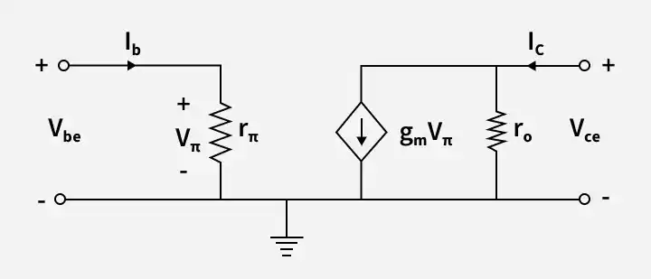
The terminal variables are related by the hybrid equations:
\(V_{1} = h_{i},I_{1} + h_{r},V_{2}\)
\(I_{2} = h_{f},I_{1} + h_{o},V_{2}\)
Where \(V_{1},I_{1}\) are input voltage and current, and \(V_{2},I_{2}\) are output voltage and current.
B. Definition of CE Hybrid Parameters
For the Common-Emitter configuration, the specific subscript \(e\) is appended to the parameters (\(V_{1} = v_{be},I_{1} = i_{b},V_{2} = v_{ce},I_{2} = i_{c}\)):
Short-Circuit Input Impedance (\(h_{ie}\)): \[h_{ie} = \left. \frac{\partial v_{BE}}{\partial i_B} \right|_{v_{CE} = \text{const}} = \left. \frac{v_b}{i_b} \right|_{v_c = 0} \quad [\Omega] \quad\]
Open-Circuit Reverse Voltage Gain (\(h_{re}\)): \[h_{re} = \left. \frac{\partial v_{BE}}{\partial v_{CE}} \right|_{i_B = \text{const}} = \left. \frac{v_b}{v_c} \right|_{i_b = 0} \quad [\text{dimensionless}] \quad\]
Short-Circuit Forward Current Gain (\(h_{fe}\)): \[h_{fe} = \left. \frac{\partial i_C}{\partial i_B} \right|_{v_{CE} = \text{const}} = \left. \frac{i_c}{i_b} \right|_{v_c = 0} = \beta_{ac} \quad [\text{dimensionless}] \quad\]
Open-Circuit Output Admittance (\(h_{oe}\)): \[h_{oe} = \left. \frac{\partial i_C}{\partial v_{CE}} \right|_{i_B = \text{const}} = \left. \frac{i_c}{v_c} \right|_{i_b = 0} \quad [\text{S or }\mu\text{S}] \quad\]
C. Exact Derivation of Two-Port Amplifier Metrics
Using the complete hybrid model loaded with load admittance \(Y_{L} = \frac{1}{Z_{L}}\):
Current Gain (\(A_{i} = \frac{I_{L}}{I_{1}} = \frac{- I_{2}}{I_{1}}\)): Substitute \(V_{2} = - I_{2}Z_{L}\) into \(I_{2} = h_{f}I_{1} + h_{o}V_{2}\): \[I_2 = h_f I_1 - h_o I_2 Z_L \implies I_2 (1 + h_o Z_L) = h_f I_1\]
Input Impedance (\(Z_{i} = \frac{V_{1}}{I_{1}}\)): Substitute \(V_{2} = - I_{2}Z_{L} = A_{i}I_{1}Z_{L}\) into \(V_{1} = h_{i}I_{1} + h_{r}V_{2}\): \[V_1 = h_i I_1 + h_r A_i I_1 Z_L \implies Z_i = \frac{V_1}{I_1} = h_i + h_r A_i Z_L\]
Voltage Gain (\(A_{v} = \frac{V_{2}}{V_{1}}\)): Since \(V_{2} = A_{i}I_{1}Z_{L}\) and \(V_{1} = I_{1}Z_{i}\):
Output Admittance (\(Y_{o} = \frac{I_{2}}{V_{2}}\) with \(V_{s} = 0\)): Setting \(V_{s} = 0\) gives \(I_{1} = \frac{- h_{r}V_{2}}{R_{s} + h_{i}}\). Substituting \(I_{1}\) into \(I_{2} = h_{f}I_{1} + h_{o}V_{2}\):
\(A_{i} = \frac{- I_{2}}{I_{1}} = \frac{- h_{f}}{1 + h_{o}Z_{L}}\)
\(Z_{i} = h_{i} - \frac{h_{f}h_{r}Z_{L}}{1 + h_{o}Z_{L}} = h_{i} - \frac{h_{f}h_{r}}{Y_{L} + h_{o}}\)
\(A_{v} = \frac{A_{i}Z_{L}}{Z_{i}} = \frac{- h_{f}Z_{L}}{h_{i} + (h_{i}h_{o} - h_{f}h_{r})Z_{L}}\)
\(Y_{o} = \frac{I_{2}}{V_{2}} = h_{o} - \frac{h_{f}h_{r}}{h_{i} + R_{s}},Z_{o} = \frac{1}{Y_{o}}\)
4. Approximate \(h\)-Model & Hybrid-\(\pi\) (\(r_{e}\)) Parameters
A. Simplification Conditions for CE Approximate Model
In practical Common-Emitter circuits, the reverse feedback parameter \(h_{re}\) is extremely small (\(\sim 10^{- 4}\)), making \(h_{re}V_{c} \approx 0\). Furthermore, the output resistance \(\frac{1}{h_{oe}}\) (typically \(40k\Omega - 50k\Omega\)) is much larger than typical collector load resistances (\(R_{L} \sim 1k\Omega - 5k\Omega\)), satisfying \(h_{oe}R_{L} \leq 0.1 \ll 1\).
Under these valid approximations:
Input Generator Removed: \(h_{re}V_{c} \rightarrow 0\) (short circuit).
Output Admittance Neglected: \(h_{oe} \rightarrow 0\) (open circuit).
B. Equivalence Between Hybrid-\(h\), Hybrid-\(\pi\), and \(r_{e}\) Model Parameters
The physical parameters of the Hybrid-\(\pi\) model (\(g_{m},r_{\pi},r_{o}\)) and \(r_{e}\) model map directly to the approximate \(h\)-parameters:
| Parameter Description | Hybrid-\(h\) Parameter | Hybrid-\(\pi\) Parameter | \(r_{e}\) Model Parameter | Mathematical Derivation / Equation |
|---|---|---|---|---|
| Transconductance | \(\frac{h_{fe}}{h_{ie}}\) | \(g_{m}\) | \(\alpha/r_{e} \approx 1/r_{e}\) | \(g_{m} = \frac{I_{CQ}}{V_{T}}\) |
| Input Resistance | \(h_{ie}\) | \(r_{\pi}\) | \(\beta r_{e}\) | \(r_{\pi} = h_{ie} = \frac{\beta V_{T}}{I_{CQ}} = \frac{\beta}{g_{m}} = \beta r_{e}\) |
| Emitter AC Resistance | \(h_{ib}\) | \(r_{e}\) | \(r_{e}\) | \(r_{e} = h_{ib} = \frac{V_{T}}{I_{EQ}} \approx \frac{26mV}{I_{E},(mA)}\) |
| Forward Current Gain | \(h_{fe}\) | \(\beta\) | \(\beta\) | \(\beta_{ac} = h_{fe} = \frac{\partial i_{C}}{\partial i_{B}}\) |
| Output Resistance | \(\frac{1}{h_{oe}}\) | \(r_{o}\) | \(r_{o}\) | \(r_{o} = \frac{1}{h_{oe}} = \frac{V_{A} + V_{CEQ}}{I_{CQ}} \approx \frac{V_{A}}{I_{CQ}}\) |
5. Step-by-Step Derivation of CE Amplifier Performance Metrics
A. Standard CE Amplifier with Voltage-Divider Bias (Bypassed \(R_{E}\))
Step 1: Input Impedance (\(Z_{i}\)) Derivation
Looking into the amplifier base terminals beyond source resistance \(R_{s}\):
\(Z_{b} = h_{ie} = r_{\pi}\)
Accounting for the parallel biasing resistors \(R_{B} = R_{1} \parallel R_{2}\):
\(Z_{i} = R_{1} \parallel R_{2} \parallel h_{ie} = R_{B} \parallel r_{\pi}\)
Step 2: Output Impedance (\(Z_{o}\)) Derivation
To calculate \(Z_{o}\), set input signal \(V_s = 0 \implies V_i = 0 \implies i_b = 0 \implies h_{fe} i_b = 0\) (open circuit):
\(Z_{o} = R_{C} \parallel r_{o} \approx R_{C}(forr_{o} \geq 10R_{C})\)
Step 3: Voltage Gain (\(A_{v} = \frac{V_{o}}{V_{i}}\)) Derivation
Output Voltage (\(V_{o}\)): The controlled current source \(h_{fe}i_{b}\) (or \(g_{m}v_{\pi}\)) flows through the parallel combination of \(r_{o}\) and \(R_{C}\):
Input Voltage (\(V_{i}\)): \(V_{i} = i_{b}h_{ie} = v_{\pi}\).
Ratio:
\(V_{o} = - i_{c}(R_{C} \parallel r_{o}) = - h_{fe}i_{b}(R_{C} \parallel r_{o}) = - g_{m}v_{\pi}(R_{C} \parallel r_{o})\)
\(A_{v} = \frac{V_{o}}{V_{i}} = \frac{- h_{fe}(R_{C} \parallel r_{o})}{h_{ie}} = - g_{m}(R_{C} \parallel r_{o}) \approx - \frac{R_{C}}{r_{e}}\)
Step 4: Overall Source Voltage Gain (\(A_{vs} = \frac{V_{o}}{V_{s}}\)) Derivation
Applying the voltage-divider rule at the input loop between source resistance \(R_{s}\) and \(Z_{i}\): \[V_i = \left( \frac{Z_i}{Z_i + R_s} \right) V_s \implies \mathbf{A_{vs} = \frac{V_o}{V_s} = A_v \left( \frac{Z_i}{Z_i + R_s} \right)} \quad\]
Step 5: Current Gain (\(A_{i}\)) Derivation
Using the two-port relation \(A_{i} = - A_{v}\left( \frac{Z_{i}}{R_{L}} \right)\) with load \(R_{L} = R_{C}\):
\(A_{i} = \frac{- h_{fe}(R_{1} \parallel R_{2})}{R_{1} \parallel R_{2} + h_{ie}} \approx - h_{fe} = - \beta\)
B. CE Amplifier with Unbypassed Emitter Resistor (\(R_{E}\))
When the emitter resistor \(R_{E}\) is unbypassed (no \(C_{E}\)), negative feedback is introduced.
Step 1: Input Resistance looking into Base (\(Z_{b}\)) Derivation
Applying KVL around the input base-emitter loop:
\(V_{i} = i_{b}h_{ie} + i_{e}R_{E}\)
Since \(i_{e} = (1 + h_{fe})i_{b} \approx h_{fe}i_{b}\):
\(V_{i} = i_{b}h_{ie} + (1 + h_{fe})i_{b}R_{E} = i_{b}\left\lbrack h_{ie} + (1 + h_{fe})R_{E} \right\rbrack\)
\(Z_{b} = \frac{V_{i}}{i_{b}} = h_{ie} + (1 + h_{fe})R_{E} \approx r_{\pi} + \beta R_{E}\)
Total input impedance: \(Z_{i} = R_{B} \parallel Z_{b}\).
Step 2: Voltage Gain (\(A_{v}\)) Derivation
\(V_{o} = - h_{fe}i_{b}R_{C}\)
\(A_{v} = \frac{V_{o}}{V_{i}} = \frac{- h_{fe}i_{b}R_{C}}{i_{b}\left\lbrack h_{ie} + (1 + h_{fe})R_{E} \right\rbrack} = \frac{- h_{fe}R_{C}}{h_{ie} + (1 + h_{fe})R_{E}}\)
For typical circuits where \((1 + h_{fe})R_{E} \gg h_{ie}\) and \(h_{fe} \gg 1\):
\(A_{v} \approx - \frac{h_{fe}R_{C}}{h_{fe}R_{E}} = - \frac{R_{C}}{R_{E}}\)
Key Insight: Unbypassed \(R_{E}\) stabilizes voltage gain against transistor parameter variations (\(\Delta\beta,\Delta V_{T}\)), making gain depend solely on passive external resistors (\(R_{C}/R_{E}\)).
6. Frequency Response Analysis & Derivations
The complete frequency spectrum of a BJT amplifier spans three distinct operational bands:
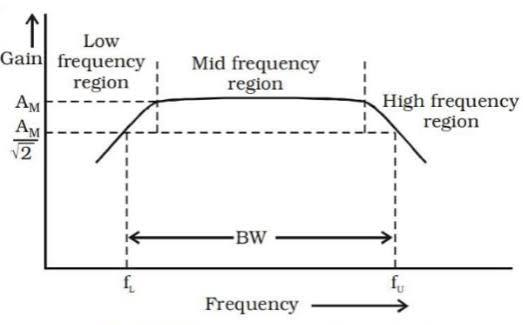
A. Low-Frequency Response (\(f < f_{L}\))
At low frequencies, the capacitive reactances \(X_{C} = \frac{1}{2\pi fC}\) of external capacitors become significant, acting as high-pass filters that attenuate gain.
Input Coupling Capacitor (\(C_{s}\) or \(C_{1}\)) Cut-off (\(f_{Ls}\)): The network formed by source \(R_{s}\), input impedance \(R_{i}\), and \(C_{s}\) gives:
Output Coupling Capacitor (\(C_{C}\) or \(C_{2}\)) Cut-off (\(f_{Lc}\)): The series output network formed by \(R_{o} = R_{C}\), load \(R_{L}\), and \(C_{C}\) gives:
Emitter Bypass Capacitor (\(C_{E}\)) Cut-off (\(f_{LE}\)): The resistance \(R_{eq}\) seen by \(C_{E}\) looking back into the emitter terminal is:
\(f_{Ls} = \frac{1}{2\pi(R_{s} + R_{i})C_{s}}\)
\(f_{Lc} = \frac{1}{2\pi(R_{o} + R_{L})C_{C}}\)
\(R_{eq} = R_{E} \parallel \left\lbrack r_{e} + \frac{R_{s} \parallel R_{1} \parallel R_{2}}{\beta} \right\rbrack\)
\(f_{LE} = \frac{1}{2\pi R_{eq}C_{E}}\)
The overall lower \(3dB\) cutoff frequency \(f_{L}\) is dominated by the highest of the three cutoff frequencies (\(f_{L} \approx \max_{}(f_{Ls},f_{Lc},f_{LE})\)).
B. Miller Effect Capacitance Derivation
For any inverting amplifier with voltage gain \(- A_{v}\), feedback capacitance \(C_{f} = C_{bc} = C_{\mu}\) connected between input (Base) and output (Collector) creates an amplified input capacitance.
Step 1: Input Miller Capacitance (\(C_{Mi}\))
Using KCL at the input node:
\(I_{i} = I_{1} + I_{2} = \frac{V_{i}}{R_{i}} + \frac{V_{i} - V_{o}}{X_{Cf}}\)
Since \(V_{o} = - A_{v}V_{i}\) (where \(A_{v} = |A_{v}|\)):
\(I_{2} = \frac{V_{i} - ( - A_{v}V_{i})}{X_{Cf}} = \frac{V_{i}(1 + A_{v})}{X_{Cf}}\)
The equivalent admittance of this feedback branch is: \[\frac{1}{X_{CMi}} = \frac{1 + A_v}{X_{Cf}} \implies \frac{1}{\frac{1}{\omega C_{Mi}}} = (1 + A_v) , \omega C_f\]
\(C_{Mi} = (1 + |A_{v}|)C_{f} = (1 + |A_{v}|)C_{bc}\)
Step 2: Output Miller Capacitance (\(C_{Mo}\))
Similarly, KCL at the output node yields:
\(I_{o} \approx \frac{V_{o} - V_{i}}{X_{Cf}} = \frac{V_{o} - \left( - \frac{V_{o}}{A_{v}} \right)}{X_{Cf}} = \frac{V_{o}\left( 1 + \frac{1}{A_{v}} \right)}{X_{Cf}}\)
\(C_{Mo} = \left( 1 + \frac{1}{|A_{v}|} \right)C_{bc} \approx C_{bc}(for|A_{v}| \gg 1)\)
C. High-Frequency Response (\(f > f_{H}\))
At high frequencies, external capacitors act as perfect short circuits, while internal junction parasitic capacitances (\(C_{be} = C_{\pi}\), \(C_{bc} = C_{\mu}\)) and frequency roll-off of \(\beta\) limit bandwidth.
Input High-Frequency Corner (\(f_{Hi}\)): Total input capacitance \(C_{i}\) includes wiring capacitance \(C_{wi}\), base-emitter diffusion capacitance \(C_{be}\), and Miller input capacitance \(C_{Mi}\):
The Thevenin input resistance \(R_{Thi}\) is:
Output High-Frequency Corner (\(f_{Ho}\)): Total output capacitance \(C_{o} = C_{wo} + C_{ce} + C_{Mo}\):
Transistor Beta Cut-off Frequency (\(f_{\beta}\)) & Unity-Gain Frequency (\(f_{T}\)): The AC short-circuit current gain \(h_{fe}\) drops at high frequencies according to:
The Gain-Bandwidth Product / Transition Frequency (\(f_{T}\)) (where \(|h_{fe}| = 1\)) is:
\(C_{i} = C_{wi} + C_{be} + (1 + |A_{v}|)C_{bc}\)
\(R_{Thi} = R_{s} \parallel R_{1} \parallel R_{2} \parallel r_{\pi}\)
\(f_{Hi} = \frac{1}{2\pi R_{Thi}C_{i}}\)
\(R_{Tho} = R_{C} \parallel R_{L} \parallel r_{o}\)
\(f_{Ho} = \frac{1}{2\pi R_{Tho}C_{o}}\)
\(h_{fe}(f) = \frac{h_{fe,mid}}{1 + j\left( \frac{f}{f_{\beta}} \right)}\)
\(f_{\beta} = \frac{1}{2\pi h_{fe,mid}r_{e}(C_{be} + C_{bc})}\)
\(f_{T} = h_{fe,mid} \cdot f_{\beta} = \frac{1}{2\pi r_{e}(C_{be} + C_{bc})}\)
The upper \(3dB\) cutoff frequency \(f_{H}\) is dominated by the lowest of the high-frequency poles (\(f_{H} \approx \min_{}(f_{Hi},f_{Ho},f_{\beta})\)), which in inverting CE amplifiers is almost always \(f_{Hi}\) due to the large Miller capacitance \(C_{Mi}\).
MOSFET Small-Signal Amplifiers (CS & CD)
1. MOSFET Small-Signal Model & Parameters
Under small-signal operation (\(v_{gs} \ll 2(V_{GSQ} - V_{T})\)), the non-linear relationship between drain current \(i_{D}\) and gate-to-source voltage \(v_{GS}\) in the saturation region (\(v_{DS} \geq v_{GS} - V_{T}\)) is linearized around the quiescent operating point (\(Q\)-point).
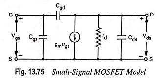
A. Transconductance (\(g_{m}\))
Transconductance measures the sensitivity of small-signal drain current \(i_{d}\) to changes in gate-to-source voltage \(v_{gs}\) at a constant \(v_{DS}\): \[\mathbf{g_m = \left.\frac{\partial i_D}{\partial v_{GS}}\right|_{V_{DS}=\text{const}}}\]
For Enhancement MOSFETs (E-MOSFET): Given \(i_{D} = k(v_{GS} - V_{T})^{2}\):
\(g_{m} = 2k(V_{GSQ} - V_{T}) = 2\)
For Depletion MOSFETs (D-MOSFET) and JFETs: Given Shockley's equation \(i_{D} = I_{DSS}\left( 1 - \frac{v_{GS}}{V_{P}} \right)^{2}\):
(where \(k = \frac{1}{2}\mu_{n}C_{ox}\left( \frac{W}{L} \right) = \frac{I_{D(on)}}{(V_{GS(on)} - V_{T})^{2}}\)).
\(g_{m} = g_{m0}\left( 1 - \frac{V_{GSQ}}{V_{P}} \right) = \frac{2I_{DSS}}{|V_{P}|}\left( 1 - \frac{V_{GSQ}}{V_{P}} \right) = g_{m0}\)
B. Output Resistance (\(r_{d}\) or \(r_{o}\))
Accounting for channel-length modulation (analogous to the Early effect in BJTs, with parameter \(\lambda\) or Early voltage \(V_{E} = \frac{1}{\lambda}\)):
\(i_{D} = K_{N}(v_{GS} - V_{TN})^{2}(1 + \lambda v_{DS})\)
\[\mathbf{r_d = \left(\left.\frac{\partial i_D}{\partial v_{DS}}\right|_{V_{GSQ}}\right)^{-1} = \left[\lambda K_N (V_{GSQ} - V_{TN})^2\right]^{-1} \approx \frac{1}{\lambda I_{DQ}} = \frac{V_E}{I_{DQ}}}\]
C. Input Resistance (\(R_{i}\))
Because of the insulating \(SiO_{2}\) layer between the gate and the channel, the DC and low-frequency AC gate current is zero (\(i_{g} = 0A\)):
\(R_{i} = \infty(Infiniteinputimpedance)\)
2. Common Source (CS) MOSFET Amplifier
In the Common Source (CS) configuration, the AC input signal is applied to the Gate, the amplified output is taken from the Drain, and the Source terminal is common to both loops (or grounded via a bypass capacitor \(C_{S}\)).
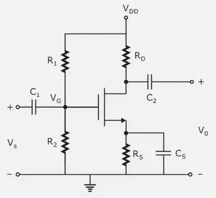
Step-by-Step Derivation of CS Performance Metrics
Using the small-signal equivalent model with voltage-divider biasing (\(R_{G} = R_{1} \parallel R_{2}\)) and source resistor bypassed (\(C_{S} \rightarrow short\)):
Step 1: Input Resistance (\(Z_{i}\))
Looking into the gate of the MOSFET, the device input resistance is infinite (\(R_{i} = \infty\)). Including the parallel gate-biasing resistors \(R_{1}\) and \(R_{2}\):
\(Z_{i} = R_{1} \parallel R_{2} = R_{G}\)
Step 2: Output Resistance (\(Z_{o}\))
Setting the input signal \(V_i = 0\text{ V} \implies v_{gs} = 0\text{ V} \implies g_m v_{gs} = 0\text{ A}\) (open circuit):
\(Z_{o} = r_{d} \parallel R_{D} \approx R_{D}(forr_{d} \geq 10R_{D})\)
Step 3: Unloaded Voltage Gain (\(A_{v} = \frac{V_{o}}{V_{i}}\))
Output Voltage (\(V_{o}\)): The controlled current source \(g_{m}v_{gs}\) flows upward through the parallel combination of \(r_{d}\) and \(R_{D}\):
Input Voltage (\(V_{i}\)): Since the source is grounded, \(v_{gs} = V_{i}\).
Voltage Gain (\(A_{v}\)):
\(V_{o} = - g_{m}v_{gs}(r_{d} \parallel R_{D})\)
\(A_{v} = \frac{V_{o}}{V_{i}} = - g_{m}(r_{d} \parallel R_{D}) \approx - g_{m}R_{D}(forr_{d} \gg R_{D})\)
Note: The negative sign indicates a \(180^{\circ}\) phase inversion between input and output voltages.
Step 4: Loaded Overall Voltage Gain (\(A_{vs} = \frac{V_{o}}{V_{s}}\))
Considering source internal resistance \(R_{sig}\) and load resistance \(R_{L}\):
\(v_{gs} = V_{i} = \left( \frac{Z_{i}}{Z_{i} + R_{sig}} \right)V_{s} = \left( \frac{R_{G}}{R_{G} + R_{sig}} \right)V_{s}\)
\(V_{o} = - g_{m}v_{gs}(r_{d} \parallel R_{D} \parallel R_{L})\)
\(A_{vs} = \frac{V_{o}}{V_{s}} = - g_{m}(r_{d} \parallel R_{D} \parallel R_{L})\left( \frac{R_{G}}{R_{G} + R_{sig}} \right)\)
Step 5: CS Amplifier with Unbypassed Source Resistor (\(R_{S}\))
If \(R_{S}\) is unbypassed, negative feedback is introduced:
\(v_{gs} = V_{i} - v_{s} = V_{i} - i_{d}R_{S}\)
\(A_{v} = \frac{- g_{m}R_{D}}{1 + g_{m}R_{S}} \approx - \frac{R_{D}}{R_{S}}(forg_{m}R_{S} \gg 1)\)
3. Common Drain (CD) Amplifier / Source Follower
In the Common Drain (CD) configuration, the AC input signal is applied to the Gate, the output is extracted from the Source, and the Drain is connected directly to \(V_{DD}\) (AC ground).
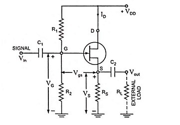
Step-by-Step Derivation of CD Performance Metrics
From the AC equivalent model of the Source Follower:
Step 1: Input Resistance (\(Z_{i}\))
Looking into the gate-to-ground path:
\(Z_{i} = R_{1} \parallel R_{2} = R_{G}\)
Step 2: Voltage Gain (\(A_{v} = \frac{V_{o}}{V_{i}}\))
Output Voltage (\(V_{o}\)): The source current \(g_{m}v_{gs}\) flows through the parallel combination of \(r_{d}\) and \(R_{S}\):
Gate-to-Source Voltage (\(v_{gs}\)): Applying KVL around the input-to-output loop: \[V_i = v_{gs} + V_o \implies v_{gs} = V_i - V_o\]
Substituting \(v_{gs}\) into Output Equation:
Voltage Gain Ratio:
\(A_{v}\) is positive (\(0^{\circ}\) phase shift / non-inverting).
The denominator exceeds the numerator by 1, so \(A_{v} < 1 \approx 1\) (unity gain buffer).
\(V_{o} = g_{m}v_{gs}(r_{d} \parallel R_{S})\)
\(V_{o} = g_{m}(V_{i} - V_{o})(r_{d} \parallel R_{S})\)
\(V_{o}\left\lbrack 1 + g_{m}(r_{d} \parallel R_{S}) \right\rbrack = g_{m}V_{i}(r_{d} \parallel R_{S})\)
\(A_{v} = \frac{V_{o}}{V_{i}} = \frac{g_{m}(r_{d} \parallel R_{S})}{1 + g_{m}(r_{d} \parallel R_{S})} \approx \frac{g_{m}R_{S}}{1 + g_{m}R_{S}}(forr_{d} \gg R_{S})\)
Key Characteristics:
Step 3: Output Resistance (\(Z_{o}\)) Derivation
To derive \(Z_{o}\), set the independent source \(V_{i} = 0V\) and apply a test voltage \(V_{x}\) to the output source node:
With \(V_{i} = 0V\), the gate is at AC ground, giving \(v_{gs} = V_{g} - V_{s} = 0 - V_{x} = - V_{x}\).
Applying KCL at the source node:
\(I_{x} + g_{m}v_{gs} = \frac{V_{x}}{r_{d}} + \frac{V_{x}}{R_{S}}\)
Substitute \(v_{gs} = - V_{x}\): \[I_x - g_m V_x = V_x \left(\frac{1}{r_d} + \frac{1}{R_S}\right) \implies I_x = V_x \left(g_m + \frac{1}{r_d} + \frac{1}{R_S}\right)\]
Output Admittance and Resistance:
\(Z_{o} = \frac{V_{x}}{I_{x}} = \frac{1}{g_{m} + \frac{1}{r_{d}} + \frac{1}{R_{S}}} = \frac{1}{g_{m}} \parallel r_{d} \parallel R_{S} \approx \frac{1}{g_{m}} \parallel R_{S} \approx \frac{1}{g_{m}}\)
Key Insight: The CD configuration provides a very low output resistance (\(\sim \frac{1}{g_{m}} \approx 50,\Omega - 300,\Omega\)), making it an ideal impedance-matching buffer.
4. Comparative Summary: CS vs. CD (Source Follower)
| Metric / Feature | Common Source (CS) | Common Drain (CD) / Source Follower |
|---|---|---|
| Input Terminal | Gate | Gate |
| Output Terminal | Drain | Source |
| Input Resistance (\(Z_{i}\)) | High (\(R_{G} = R_{1} \parallel R_{2} \sim M\Omega\)) | High (\(R_{G} = R_{1} \parallel R_{2} \sim M\Omega\)) |
| Output Resistance (\(Z_{o}\)) | Moderate to High (\(R_{D} \parallel r_{d} \sim k\Omega\)) | Very Low (\(\frac{1}{g_{m}} \parallel R_{S} \sim \Omega\)) |
| Voltage Gain (\(A_{v}\)) | High (\(A_{v} = - g_{m}R_{D}\)) | Unity (\(A_{v} = \frac{g_{m}R_{S}}{1 + g_{m}R_{S}} < 1\)) |
| Phase Shift | \(180^{\circ}\) (Inverting) | \(0^{\circ}\) (Non-inverting / Follower) |
| Primary Function | Voltage Amplification | Impedance Matching / Buffer |
5. Frequency Response Analysis of MOSFET Amplifiers
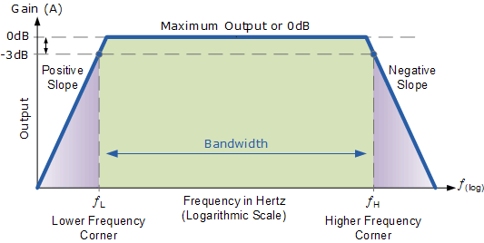
A. Low-Frequency Response (\(f < f_{L}\))
At low frequencies, coupling capacitors (\(C_{G},C_{C}\)) and source bypass capacitor (\(C_{S}\)) introduce high-pass pole frequencies:
Gate Coupling Capacitor (\(C_{G}\)) Corner (\(f_{LG}\)):
Drain Coupling Capacitor (\(C_{C}\)) Corner (\(f_{LC}\)):
Source Bypass Capacitor (\(C_{S}\)) Corner (\(f_{LS}\)): The equivalent resistance \(R_{eq}\) seen by \(C_{S}\) looking back into the source node is:
\(f_{LG} = \frac{1}{2\pi(R_{sig} + R_{i})C_{G}} = \frac{1}{2\pi(R_{sig} + R_{G})C_{G}}\)
\(f_{LC} = \frac{1}{2\pi(R_{o} + R_{L})C_{C}} = \frac{1}{2\pi(R_{D} \parallel r_{d} + R_{L})C_{C}}\)
\(R_{eq} = R_{S} \parallel \frac{1}{g_{m}}\)
\(f_{LS} = \frac{1}{2\pi R_{eq}C_{S}} = \frac{1}{2\pi\left( R_{S} \parallel \frac{1}{g_{m}} \right)C_{S}}\)
The overall lower \(3dB\) cutoff frequency is determined by the highest of the three low-frequency pole values (\(f_{L} \approx \max_{}(f_{LG},f_{LC},f_{LS})\)).
B. High-Frequency Response (\(f > f_{H}\)) & Miller Effect
At high frequencies, external coupling/bypass capacitors act as short circuits, while internal parasitic interelectrode capacitances (\(C_{gs},C_{gd},C_{ds}\)) limit bandwidth.
1. Derivation of Miller Effect Capacitance
For inverting amplifiers (such as the CS configuration) with negative voltage gain \(- A_{v}\):
Input Miller Capacitance (\(C_{Mi}\)): Feedback capacitance \(C_{gd}\) bridging input and output nodes carries current \(I_{f} = \frac{V_{i} - V_{o}}{X_{Cgd}} = \frac{V_{i} - ( - A_{v}V_{i})}{X_{Cgd}} = \frac{V_{i}(1 + A_{v})}{X_{Cgd}}\).
Output Miller Capacitance (\(C_{Mo}\)):
\(C_{Mi} = (1 - A_{v})C_{gd} = (1 + |A_{v}|)C_{gd}\)
\(C_{Mo} = \left( 1 - \frac{1}{A_{v}} \right)C_{gd} \approx C_{gd}(for|A_{v}| \gg 1)\)
2. High-Frequency Pole Frequencies
Input High-Frequency Corner (\(f_{Hi}\)): Total input capacitance \(C_{i} = C_{Wi} + C_{gs} + C_{Mi} = C_{Wi} + C_{gs} + (1 + |A_{v}|)C_{gd}\). Thevenin input resistance \(R_{Thi} = R_{sig} \parallel R_{G}\).
Output High-Frequency Corner (\(f_{Ho}\)): Total output capacitance \(C_{o} = C_{Wo} + C_{ds} + C_{Mo} \approx C_{Wo} + C_{ds} + C_{gd}\). Thevenin output resistance \(R_{Tho} = R_{D} \parallel R_{L} \parallel r_{d}\).
\(f_{Hi} = \frac{1}{2\pi R_{Thi}C_{i}}\)
\(f_{Ho} = \frac{1}{2\pi R_{Tho}C_{o}}\)
The overall upper \(3dB\) cutoff frequency is governed by the lowest of the high-frequency poles (\(f_{H} \approx \min_{}(f_{Hi},f_{Ho})\)), which in CS amplifiers is almost always \(f_{Hi}\) due to the large Miller multiplication factor.
Differential Amplifier
1. Introduction & Fundamental Concept
A Differential Amplifier is a fundamental building block of analog integrated circuits (such as operational amplifiers) designed to amplify the difference between two input voltage signals while rejecting any voltage signal common to both inputs.
A. General Output Expression
If two input voltages \(V_{1}\) and \(V_{2}\) are applied to the input terminals, the total output voltage \(V_{o}\) is given by:
\(V_{o} = A_{d}V_{d} + A_{c}V_{c}\)
Where:
\(V_{d} = V_{1} - V_{2}\) is the Differential-Mode Input Voltage.
\(V_{c} = \frac{V_{1} + V_{2}}{2}\) is the Common-Mode Input Voltage (the average of the two inputs).
\(A_{d}\) is the Differential Voltage Gain.
\(A_{c}\) is the Common-Mode Voltage Gain.
2. Circuit Topology & Operating Principles
The basic emitter-coupled BJT differential amplifier consists of two symmetrical, matched NPN transistors (\(Q_{1}\) and \(Q_{2}\)) whose emitters are connected together to a shared emitter resistor \(R_{E}\) (or a constant-current source) and biased using dual voltage supplies (\(+ V_{CC}\) and \(- V_{EE}\)).
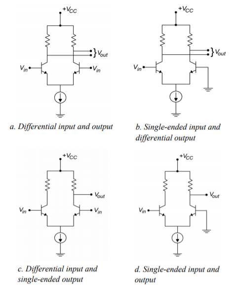
Symmetry: Transistors \(Q_{1}\) and \(Q_{2}\) are fabricated to have identical parameters (\(h_{fe1} = h_{fe2} = \beta\), \(h_{ie1} = h_{ie2} = h_{ie}\), \(r_{e1} = r_{e2} = r_{e}\)), and the collector resistors are equal (\(R_{C1} = R_{C2} = R_{C}\)).
Quiescent Equilibrium: When \(V_{1} = V_{2} = 0V\), equal currents flow through \(Q_{1}\) and \(Q_{2}\), establishing identical collector voltages (\(V_{C1} = V_{C2}\)) and producing zero net differential output voltage.
3. Operating Modes & Configurations
A. Input Modes
Single-Ended Input: An input signal is applied to one input terminal while the second input terminal is connected to AC ground (\(V_{1} = V_{s},V_{2} = 0V\)).
Double-Ended / Differential Input: Two distinct signals of opposite phase (\(V_{1} = + V_{s}/2,V_{2} = - V_{s}/2\)) are applied across the two inputs, yielding a net difference \(V_{d} = V_{s}\).
Common-Mode Input: Identical signals of the same amplitude and phase are applied simultaneously to both inputs (\(V_{1} = V_{2} = V_{c}\)).
B. Output Modes
Double-Ended (Balanced) Output: The output is measured between the two collectors (\(V_{o} = V_{C1} - V_{C2}\)).
Single-Ended (Unbalanced) Output: The output is measured from one collector with respect to ground (\(V_{o} = V_{C1}\) or \(V_{o} = V_{C2}\)).
4. DC Bias Analysis & Derivation
For DC analysis, all AC signal sources are set to zero (\(V_{B1} = V_{B2} = 0V\)).
Step 1: KVL around Base-Emitter Loop
Applying Kirchhoff’s Voltage Law (KVL) around the base-emitter loop of \(Q_{1}\):
\(I_{B}R_{s} + V_{BE} + I_{E,total}R_{E} = V_{EE}\)
Since both matched transistors conduct equally (\(I_{E1} = I_{E2} = I_{E}\)), the total current passing through \(R_{E}\) is \(I_{E,total} = 2I_{E}\):
\(I_{B}R_{s} + V_{BE} + 2I_{E}R_{E} = V_{EE}\)
Step 2: Base Current Substitution
Substituting \(I_{B} = \frac{I_{C}}{\beta} \approx \frac{I_{E}}{\beta}\):
\(\left( \frac{I_{E}}{\beta} \right)R_{s} + V_{BE} + 2I_{E}R_{E} = V_{EE}\)
\(I_{E}\left\lbrack \frac{R_{s}}{\beta} + 2R_{E} \right\rbrack = V_{EE} - V_{BE}\)
\(I_{E} = \frac{V_{EE} - V_{BE}}{\frac{R_{s}}{\beta} + 2R_{E}}\)
Step 3: Practical Approximation
In practical integrated circuits, \(\frac{R_{s}}{\beta} \ll 2R_{E}\). Therefore:
\(I_{E} \approx \frac{V_{EE} - V_{BE}}{2R_{E}}\left( V_{BE} \approx 0.7VforSi \right)\)
Step 4: Collector Current & Voltages
Quiescent Collector Current (\(I_{C}\)):
Quiescent Collector Voltage (\(V_{C}\)):
Quiescent Collector-Emitter Voltage (\(V_{CE}\)):
\(V_{CE} = V_{C} - V_{E} = V_{CC} - I_{C}R_{C} + V_{BE}\)
\(I_{C1} = I_{C2} = I_{C} \approx I_{E} = \frac{V_{EE} - V_{BE}}{2R_{E}}\)
\(V_{C1} = V_{C2} = V_{CC} - I_{C}R_{C}\)
\(V_{E} = - V_{BE}\)
5. AC Small-Signal Analysis & Derivation
Using the BJT \(h\)-parameter model (\(h_{ie} = r_{\pi} = \beta r_{e}\), \(h_{fe} = \beta\)) to evaluate small-signal performance.
A. Differential-Mode Operation (\(A_{d}\)) Derivation
For pure differential-mode input, let \(V_{1} = + \frac{V_{s}}{2}\) and \(V_{2} = - \frac{V_{s}}{2}\), so that \(V_{d} = V_{1} - V_{2} = V_{s}\).
Virtual Ground at Emitter Node: Because \(V_{1}\) and \(V_{2}\) are equal in magnitude and \(180^{\circ}\) out of phase, the AC currents from \(Q_{1}\) and \(Q_{2}\) entering the emitter node are \(i_{e1} = - i_{e2}\). The net AC voltage variation at the common emitter node is zero (\(v_{e} = 0V\)), acting as a virtual AC ground.
Base Current (\(I_{b}\)): Applying KVL to the input half-circuit: \[I_b (R_s + h_{ie}) = \frac{V_s}{2} \implies I_b = \frac{V_s}{2 (R_s + h_{ie})}\]
Unbalanced (Single-Ended) Output Voltage (\(V_{o}\)):
Single-Ended Differential Gain (\(A_{d}\)):
For \(R_{s} \approx 0\Omega\) and substituting \(h_{ie} = \beta r_{e} = h_{fe}r_{e}\):
Balanced (Double-Ended) Differential Gain (\(A_{d,balanced}\)): Taking the output across both collectors (\(V_{o} = V_{o1} - V_{o2} = 2V_{o1}\)) doubles the magnitude:
\(V_{o} = - h_{fe}I_{b}R_{C} = - h_{fe}R_{C}\left\lbrack \frac{V_{s}}{2(R_{s} + h_{ie})} \right\rbrack\)
\(A_{d} = \left| \frac{V_{o}}{V_{d}} \right| = \left| \frac{V_{o}}{V_{s}} \right| = \frac{h_{fe}R_{C}}{2(R_{s} + h_{ie})}\)
\(A_{d} = \frac{h_{fe}R_{C}}{2h_{fe}r_{e}} = \frac{R_{C}}{2r_{e}}\)
\(A_{d,balanced} = \frac{h_{fe}R_{C}}{R_{s} + h_{ie}} \approx \frac{R_{C}}{r_{e}}\)
B. Common-Mode Operation (\(A_{c}\)) Derivation
For common-mode input, identical signals are applied: \(V_{1} = V_{2} = V_{c} = V_{s}\).
Effective Emitter Resistance: In common-mode operation, both transistors carry equal, in-phase AC emitter currents (\(i_{e1} = i_{e2} = i_{e}\)). The total AC current through \(R_{E}\) is \(2i_{e}\). Thus, each transistor sees an effective AC emitter resistance of \(2R_{E}\).
KVL at Input Loop:
Common-Mode Voltage Gain (\(A_{c}\)):
\(V_{s} = I_{b}R_{s} + I_{b}h_{ie} + (2R_{E})I_{e}\)
Since \(I_{e} = (1 + h_{fe})I_{b}\):
\(V_{s} = I_{b}\left\lbrack R_{s} + h_{ie} + 2(1 + h_{fe})R_{E} \right\rbrack\)
\(I_{b} = \frac{V_{s}}{R_{s} + h_{ie} + 2(1 + h_{fe})R_{E}}\)
\(V_{o} = - h_{fe}I_{b}R_{C} = \frac{- h_{fe}R_{C}V_{s}}{R_{s} + h_{ie} + 2(1 + h_{fe})R_{E}}\)
\(A_{c} = \frac{V_{o}}{V_{s}} = \frac{- h_{fe}R_{C}}{R_{s} + h_{ie} + 2(1 + h_{fe})R_{E}} \approx \frac{- R_{C}}{2R_{E}}\)
C. Input and Output Impedance Derivations
Differential Input Resistance (\(R_{id}\)): The resistance seen looking into the two input terminals in differential mode:
Common-Mode Input Resistance (\(R_{ic}\)):
Output Resistance (\(R_{o}\)): Looking into the collector output terminals:
Single-Ended Output: \(R_{o} = R_{C}\)
Balanced Output: \(R_{o} = 2R_{C}\)
\(R_{id} = 2(R_{s} + h_{ie}) \approx 2h_{ie} = 2r_{\pi}\)
\(R_{ic} \approx R_{s} + h_{ie} + 2(1 + h_{fe})R_{E} \approx 2h_{fe}R_{E}\)
6. Common-Mode Rejection Ratio (CMRR)
The Common-Mode Rejection Ratio (CMRR) quantifies the ability of a differential amplifier to amplify differential signals while rejecting common-mode noise and interference.
A. Derivation of CMRR Equation
By definition:
\(CMRR = \left| \frac{A_{d}}{A_{c}} \right|\)
Unbalanced Output Case:
Balanced Output Case:
Decibel Expression (\(CMRR_{dB}\)): \[\text{CMRR}{\text{dB}} = 20 \log{10} \left| \frac{A_d}{A_c} \right|\]
\(CMRR = \frac{\frac{h_{fe}R_{C}}{2(R_{s} + h_{ie})}}{\frac{h_{fe}R_{C}}{R_{s} + h_{ie} + 2(1 + h_{fe})R_{E}}} = \frac{R_{s} + h_{ie} + 2(1 + h_{fe})R_{E}}{2(R_{s} + h_{ie})}\)
\(CMRR \approx \frac{(1 + h_{fe})R_{E}}{R_{s} + h_{ie}} \approx \frac{h_{fe}R_{E}}{R_{s} + h_{ie}}\)
\(CMRR = \frac{\frac{h_{fe}R_{C}}{R_{s} + h_{ie}}}{\frac{h_{fe}R_{C}}{R_{s} + h_{ie} + 2(1 + h_{fe})R_{E}}} = \frac{R_{s} + h_{ie} + 2(1 + h_{fe})R_{E}}{R_{s} + h_{ie}} \approx \frac{2h_{fe}R_{E}}{R_{s} + h_{ie}}\)
B. Improvement via Constant-Current Source
To maximize CMRR, the common-mode gain \(A_{c}\) should approach zero, which requires \(R_{E} \rightarrow \infty\).
Constant-Current Source Replacement: Replacing the passive resistor \(R_{E}\) with an active transistor constant-current source (or current mirror) provides an extremely large AC internal resistance (\(R_{E} = r_{o} \sim hundredsofk\Omega\)) while dropping minimal DC voltage.
7. Summary Comparison Matrix
| Parameter / Metric | Single-Ended (Unbalanced) Output | Double-Ended (Balanced) Output |
|---|---|---|
| Differential Gain (\(A_{d}\)) | \(\frac{h_{fe}R_{C}}{2(R_{s} + h_{ie})} \approx \frac{R_{C}}{2r_{e}}\) | \(\frac{h_{fe}R_{C}}{R_{s} + h_{ie}} \approx \frac{R_{C}}{r_{e}}\) |
| Common-Mode Gain (\(A_{c}\)) | \(\frac{- h_{fe}R_{C}}{R_{s} + h_{ie} + 2(1 + h_{fe})R_{E}} \approx \frac{- R_{C}}{2R_{E}}\) | Ideally \(0\) (Cancels at collector outputs) |
| Differential Input Impedance (\(R_{id}\)) | \(2(R_{s} + h_{ie}) \approx 2r_{\pi}\) | \(2(R_{s} + h_{ie}) \approx 2r_{\pi}\) |
| Output Resistance (\(R_{o}\)) | \(R_{C}\) | \(2R_{C}\) |
| \(CMRR\) Ratio | \(\approx \frac{h_{fe}R_{E}}{R_{s} + h_{ie}}\) | \(\approx \frac{2h_{fe}R_{E}}{R_{s} + h_{ie}}\) |
Oscillators
1. Introduction to Oscillators & Feedback Topologies
An oscillator is an electronic circuit that converts direct current (DC) power from a bias supply into a continuous, repetitive alternating current (AC) output waveform (sinusoidal, square, or triangular) without requiring an external AC input signal.
A. Classification of Feedback Amplifiers
Feedback networks alter amplifier behavior by returning a portion of the output signal to the input. Depending on how the feedback signal is sampled at the output and mixed at the input, four basic feedback topologies exist:
Voltage-Series Feedback: Samples output voltage, mixes in series with input voltage. Increases input impedance (\(Z_{if} = Z_{i}(1 + \beta A)\)), decreases output impedance (\(Z_{of} = \frac{Z_{o}}{1 + \beta A}\)).
Voltage-Shunt Feedback: Samples output voltage, mixes in parallel (shunt) with input current. Decreases both input impedance (\(Z_{if} = \frac{Z_{i}}{1 + \beta A}\)) and output impedance (\(Z_{of} = \frac{Z_{o}}{1 + \beta A}\)).
Current-Series Feedback: Samples output current, mixes in series with input voltage. Increases both input impedance (\(Z_{if} = Z_{i}(1 + \beta A)\)) and output impedance (\(Z_{of} = Z_{o}(1 + \beta A)\)).
Current-Shunt Feedback: Samples output current, mixes in parallel with input current. Decreases input impedance (\(Z_{if} = \frac{Z_{i}}{1 + \beta A}\)), increases output impedance (\(Z_{of} = Z_{o}(1 + \beta A)\)).
B. Positive Feedback vs. Negative Feedback
Negative Feedback: The feedback signal is \(180^{\circ}\) out of phase with the input signal (\(\beta A > 0\), denominator \(1 + \beta A > 1\)), which stabilizes gain (\(A_{f} = \frac{A}{1 + \beta A}\)), reduces distortion, and widens bandwidth.
Positive Feedback (Regenerative): The feedback signal is in phase with the input signal (\(\beta A = - 1\) or phase angle \(180^{\circ}\), making denominator \(1 - \beta A \rightarrow 0\)). This drives the closed-loop gain \(A_{f} \rightarrow \infty\), enabling self-sustained oscillations without an external input.
2. Condition for Oscillation: The Barkhausen Criterion
Consider a feedback loop comprising an amplifier with open-loop voltage gain \(A\) and a feedback network with transfer ratio \(\beta\):
When the fictitious input signal \(V_{i}\) produces an output \(V_{o} = AV_{i}\), the feedback network feeds back \(V_{f} = \beta V_{o} = \beta AV_{i}\) to the input. For the circuit to sustain this output after removing \(V_{i}\), \(V_{f}\) must be identical in magnitude and phase to \(V_{i}\).
Mathematical Formulation of Barkhausen Criterion
Magnitude Condition: The magnitude of the loop gain must equal unity:
Phase Condition: The total phase shift around the closed loop must be an integer multiple of \(360^{\circ}\) (or \(0^{\circ}\)):
If an inverting amplifier is used (providing \(180^{\circ}\) phase shift), the feedback network must introduce an additional \(180^{\circ}\) phase shift at the desired oscillation frequency \(f_{o}\).
\(|\beta A| = 1\)
(In practical circuit design, startup requires \(|\beta A| > 1\) to amplify thermal noise; non-linear device saturation subsequently stabilizes the steady-state loop gain to \(|\beta A| = 1\)).
\(\angle\beta A = 0^{\circ}or360^{\circ}(2\pi krad)\)
3. RC Phase-Shift Oscillator
The RC Phase-Shift Oscillator uses an inverting amplifier (BJT, FET, or Op-Amp) combined with a three-stage \(RC\) ladder feedback network.
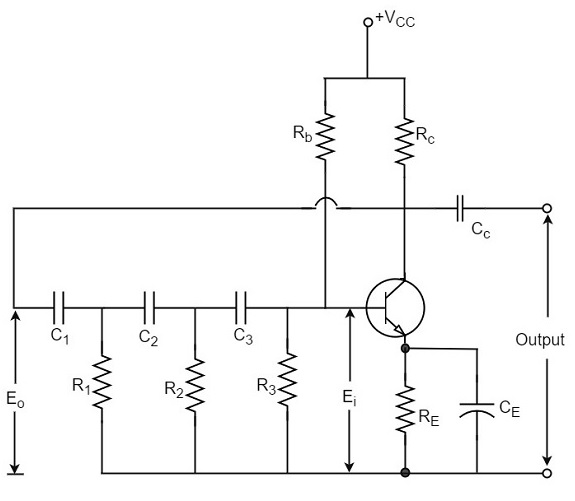
Amplifier Stage: Provides a \(180^{\circ}\) phase shift between input and output.
Feedback Network: A 3-stage \(RC\) high-pass ladder network. At the specific frequency \(f_{o}\), each \(RC\) section contributes a non-uniform phase shift such that the total attenuation network produces exactly \(180^{\circ}\) phase shift, yielding an overall loop phase shift of \(360^{\circ}\).
B. Step-by-Step Mathematical Derivation
Transfer Function of 3-Stage \(RC\) Network: Applying nodal analysis to the unloaded \(RC\) ladder network with identical resistors \(R\) and capacitors \(C\):
Dividing Numerator and Denominator by \(- j\omega^{3}R^{3}C^{3}\):
Derivation of Oscillation Frequency (\(f_{o}\)): To satisfy the Barkhausen phase condition, the feedback ratio \(\beta(\omega)\) must be purely real (phase shift of \(180^{\circ}\)). Thus, the imaginary component in the denominator must equal zero: \[\frac{6}{\omega R C} - \frac{1}{\omega^3 R^3 C^3} = 0 \implies \frac{6}{\omega R C} = \frac{1}{\omega^3 R^3 C^3}\] \[\omega^2 R^2 C^2 = \frac{1}{6} \implies \omega = \frac{1}{R C \sqrt{6}}\]
Derivation of Minimum Gain Condition (\(A\) or \(h_{fe}\)): Substituting \(\omega^{2}R^{2}C^{2} = \frac{1}{6}\) back into the real part of \(\beta(\omega)\):
The negative sign confirms the \(180^{\circ}\) phase inversion, with an attenuation factor of \(\frac{1}{29}\). Applying \(|\beta A| \geq 1\): \[|A| \ge \frac{1}{|\beta|} = 29 \implies \mathbf{|A| \ge 29}\]
Transistor (BJT) Implementation Variant: When accounting for base loading resistance \(R_{i} \approx h_{ie}\), the operating frequency and transistor current gain requirements become:
\(\beta(s) = \frac{V_{f}(s)}{V_{o}(s)} = \frac{(sRC)^{3}}{(sRC)^{3} + 6(sRC)^{2} + 5(sRC) + 1}\)
Substituting \(s = j\omega\):
\(\beta(j\omega) = \frac{- j\omega^{3}R^{3}C^{3}}{(1 - 6\omega^{2}R^{2}C^{2}) + j(5\omega RC - \omega^{3}R^{3}C^{3})}\)
\(\beta(\omega) = \frac{1}{\left( 1 - \frac{5}{\omega^{2}R^{2}C^{2}} \right) + j\left( \frac{6}{\omega RC} - \frac{1}{\omega^{3}R^{3}C^{3}} \right)}\)
\(f_{o} = \frac{1}{2\pi RC}\)
\(\beta = \frac{1}{1 - 5(6)} = \frac{1}{1 - 30} = - \frac{1}{29}\)
\(f_{o} = \frac{1}{2\pi RC}\)
\(h_{fe} \geq 23 + 29\left( \frac{R}{R_{C}} \right) + 4\left( \frac{R_{C}}{R} \right)\)
4. Wien Bridge Oscillator
The Wien Bridge Oscillator is a low-frequency, highly stable audio-range oscillator based on a four-arm Wheatstone bridge network.
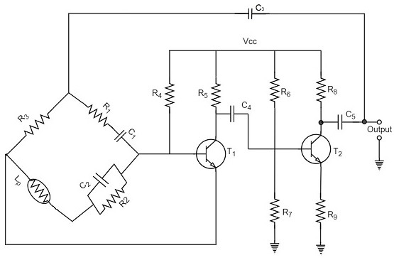
A. Construction & Working Principle
Bridge Architecture:
Series Arm (\(R_{1},C_{1}\)) & Parallel Arm (\(R_{2},C_{2}\)): Forms the frequency-selective reactive feedback path connected to the non-inverting (+) input.
Resistive Divider Arm (\(R_{3},R_{4}\)): Forms the negative feedback voltage-divider connected to the inverting (-) input to stabilize amplifier gain.
Phase Alignment: At resonance frequency \(f_{o}\), the reactive arms produce zero phase shift (\(\angle\beta = 0^{\circ}\)). Paired with a non-inverting amplifier (\(0^{\circ}\) phase shift), total loop phase shift is \(0^{\circ}\).
B. Step-by-Step Mathematical Derivation
Transfer Function of Reactive Feedback Branch: Let series impedance be \(Z_{s} = R_{1} + \frac{1}{j\omega C_{1}}\) and parallel impedance be \(Z_{p} = R_{2} \parallel \frac{1}{j\omega C_{2}} = \frac{R_{2}}{1 + j\omega R_{2}C_{2}}\). The feedback factor \(\beta(j\omega)\) to the non-inverting terminal is:
Multiplying numerator and denominator by \(j\omega C_{1}(1 + j\omega R_{2}C_{2})\):
Derivation of Resonant Frequency (\(f_{o}\)): For zero phase shift (\(\angle\beta = 0^{\circ}\)), the real part of the denominator must equal zero: \[1 - \omega^2 R_1 R_2 C_1 C_2 = 0 \implies \omega^2 = \frac{1}{R_1 R_2 C_1 C_2}\]
For equal components (\(R_{1} = R_{2} = R\) and \(C_{1} = C_{2} = C\)):
Derivation of Feedback Factor and Gain Requirement: Substituting \(\omega^{2}R^{2}C^{2} = 1\) back into \(\beta(j\omega)\):
The non-inverting closed-loop op-amp voltage gain is \(A_{v} = 1 + \frac{R_{3}}{R_{4}}\). Applying Barkhausen criterion (\(A_{v}\beta \geq 1\)): \[\left(1 + \frac{R_3}{R_4}\right) \cdot \frac{1}{3} \ge 1 \implies 1 + \frac{R_3}{R_4} \ge 3 \implies \mathbf{\frac{R_3}{R_4} \ge 2}\]
\(\beta(j\omega) = \frac{V_{f}}{V_{o}} = \frac{Z_{p}}{Z_{s} + Z_{p}} = \frac{\frac{R_{2}}{1 + j\omega R_{2}C_{2}}}{\left( R_{1} + \frac{1}{j\omega C_{1}} \right) + \frac{R_{2}}{1 + j\omega R_{2}C_{2}}}\)
\(\beta(j\omega) = \frac{j\omega R_{2}C_{1}}{(1 + j\omega R_{1}C_{1})(1 + j\omega R_{2}C_{2}) + j\omega R_{2}C_{1}}\)
\(\beta(j\omega) = \frac{j\omega R_{2}C_{1}}{\left( 1 - \omega^{2}R_{1}R_{2}C_{1}C_{2} \right) + j\omega(R_{1}C_{1} + R_{2}C_{2} + R_{2}C_{1})}\)
\(f_{o} = \frac{1}{2\pi}\)
\(f_{o} = \frac{1}{2\pi RC}\)
\(\beta = \frac{j\omega RC}{j\omega(RC + RC + RC)} = \frac{j\omega RC}{j\omega(3RC)} = \frac{1}{3}\)
5. LC Oscillators: Colpitts & Hartley
Tuned \(LC\) oscillators utilize reactive tank circuits consisting of inductors and capacitors to generate high-frequency RF signals.
Basic Resonant Circuit Framework
Both Colpitts and Hartley oscillators can be analyzed using a generalized three-reactive element block model:

A. Colpitts Oscillator
1. Construction & Working Principle
Tank Configuration: Consists of two split capacitors (\(C_{1} = X_{1}\), \(C_{2} = X_{2}\)) and a single inductor (\(L = X_{3}\)).
Phase Inversion: The central tap between \(C_{1}\) and \(C_{2}\) is grounded. As current flows through the tank, the voltages across \(C_{1}\) and \(C_{2}\) are \(180^{\circ}\) out of phase, satisfying the Barkhausen phase requirement when paired with an inverting amplifier.
2. Mathematical Derivation
The equivalent series capacitance of \(C_{1}\) and \(C_{2}\) is:
\(C_{eq} = \frac{C_{1}C_{2}}{C_{1} + C_{2}}\)
The resonant frequency of the \(LC\) tank is:
\(f_{o} = \frac{1}{2\pi} = \frac{1}{2\pi}\)
The feedback factor \(\beta\) represents the voltage division across the capacitive divider:
\(\beta = \frac{X_{C1}}{X_{C2}} = \frac{C_{2}}{C_{1}}\)
Minimum required voltage gain for sustained oscillation:
\(A_{v} \geq \frac{C_{1}}{C_{2}}orh_{fe} \geq \frac{C_{1}}{C_{2}}\)
B. Hartley Oscillator
1. Construction & Working Principle
Tank Configuration: Consists of two series-connected inductors (\(L_{1} = X_{1}\), \(L_{2} = X_{2}\)) with mutual inductance \(M\), and a single tuning capacitor (\(C = X_{3}\)).
Phase Inversion: The center tap between \(L_{1}\) and \(L_{2}\) is grounded, providing a \(180^{\circ}\) phase inversion across the inductive voltage divider.
2. Mathematical Derivation
Accounting for mutual inductive coupling \(M\) between \(L_{1}\) and \(L_{2}\), total equivalent inductance \(L_{eq}\) is:
\(L_{eq} = L_{1} + L_{2} + 2M\)
The resonant frequency of oscillation is:
\(f_{o} = \frac{1}{2\pi} = \frac{1}{2\pi}\)
The feedback ratio \(\beta\) is determined by the inductive tap ratio:
\(\beta = \frac{L_{1} + M}{L_{2} + M} \approx \frac{L_{1}}{L_{2}}\)
Minimum required voltage gain for sustained oscillation:
\(A_{v} \geq \frac{L_{1} + M}{L_{2} + M} \approx \frac{L_{1}}{L_{2}}\)
6. Crystal Oscillator
A Crystal Oscillator replaces conventional \(LC\) tank circuits with a piezoelectric quartz crystal to achieve exceptional frequency stability against temperature and supply variations.
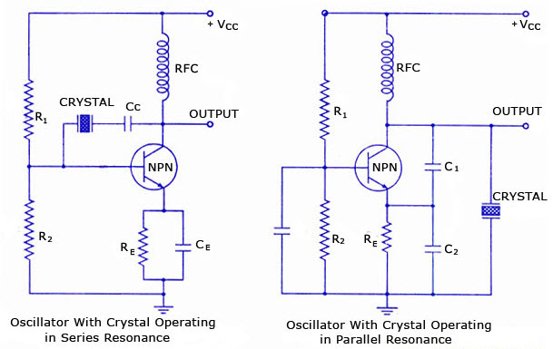
A. Piezoelectric Effect & Equivalent Circuit
Piezoelectric Effect: Applying mechanical pressure across quartz crystal faces induces an electric potential; conversely, applying an AC voltage produces mechanical vibrations at a precise natural resonant frequency.
Equivalent Circuit:
Series \(RLC\) Branch: Represents mechanical crystal mass (\(L\)), compliance/stiffness (\(C\)), and internal structural friction losses (\(R\)).
Parallel Capacitance (\(C_{M}\)): Represents electrostatic capacitance between the mounting metal electrodes holding the crystal.
Quality Factor (\(Q\)): Extremely high due to tiny internal friction loss \(R\), with typical \(Q \approx 20,000\) up to \(10^{6}\) (compared to \(Q \sim 100\) for standard \(LC\) tanks).
B. Dual Resonant Frequencies & Derivations
Series Resonant Frequency (\(f_{s}\)): Occurs when reactances of series branch \(L\) and \(C\) cancel out (\(X_{L} = X_{C}\)). The crystal impedance drops to a minimum (equal to \(R\)): \[2\pi f_s L = \frac{1}{2\pi f_s C} \implies \mathbf{f_s = \frac{1}{2\pi \sqrt{L C}}}\]
Parallel Resonant / Antiresonant Frequency (\(f_{p}\)): Occurs at a slightly higher frequency when net inductive reactance of the series \(RLC\) leg equals the capacitive reactance of mounting capacitance \(C_{M}\). Total equivalent capacitance is \(C_{eq} = \frac{CC_{M}}{C + C_{M}}\). Impedance reaches a maximum peak:
\(f_{p} = \frac{1}{2\pi} = \frac{1}{2\pi}\)
Since \(C_{M} \gg C\), \(C_{eq} \approx C\), placing \(f_{p}\) just fractionally above \(f_{s}\) (narrow inductive reactance region between \(f_{s}\) and \(f_{p}\) where stable oscillation occurs).
7. Summary Comparison Matrix of Oscillator Circuits
| Oscillator Type | Reactive / Tuning Elements | Resonant Frequency Formula (\(f_o\)) | Minimum Amplifier Gain Requirement | Typical Operating Frequency Range | Key Feature / Advantage |
|---|---|---|---|---|---|
| RC Phase-Shift | 3 \(RC\) sections | \(f_o=\frac{1}{2\pi RC\sqrt{6}}\) | \(|A|\ge 29\) | Hz – 1 MHz (audio) | Simple, low cost; sine waves at audio frequencies |
| Wien Bridge | Lead-lag \(RC\) bridge | \(f_o=\frac{1}{2\pi RC}\) | \(|A_v|\ge 3\;\Rightarrow\;\frac{R_3}{R_4}\ge 2\) | Hz – 1 MHz (audio) | Low distortion; easy tuning with ganged R or C |
| Colpitts | 2 capacitors (\(C_1,C_2\)), 1 inductor (\(L\)) | \(f_o=\frac{1}{2\pi\sqrt{LC_{eq}}},\;C_{eq}=\frac{C_1C_2}{C_1+C_2}\) | \(|A_v|\ge \frac{C_1}{C_2}\) | 100 kHz – several hundred MHz (RF) | Good frequency stability; capacitive feedback divider |
| Hartley | 2 inductors (\(L_1,L_2\)), 1 capacitor (\(C\)) | \(f_o=\frac{1}{2\pi\sqrt{L_{eq}C}},\;L_{eq}=L_1+L_2+2M\) | \(|A_v|\ge \frac{L_1}{L_2}\) | 100 kHz – several hundred MHz (RF) | Tapped coil; easy tuning with one variable capacitor |
| Quartz Crystal | Piezoelectric quartz crystal (\(L,C,R,C_M\)) | \(f_s=\frac{1}{2\pi\sqrt{LC}}\) | Varies by circuit topology | 10 kHz – 100 MHz | Highest frequency stability (\(Q\sim 10^{6}\)) |
Cheat Sheets
A. Semiconductors
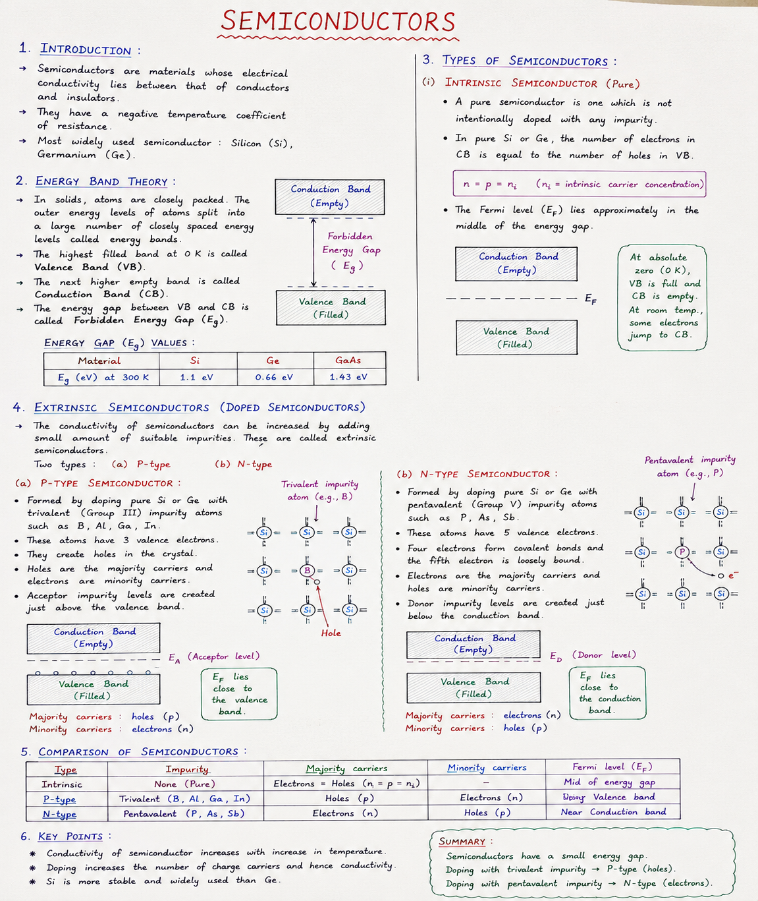


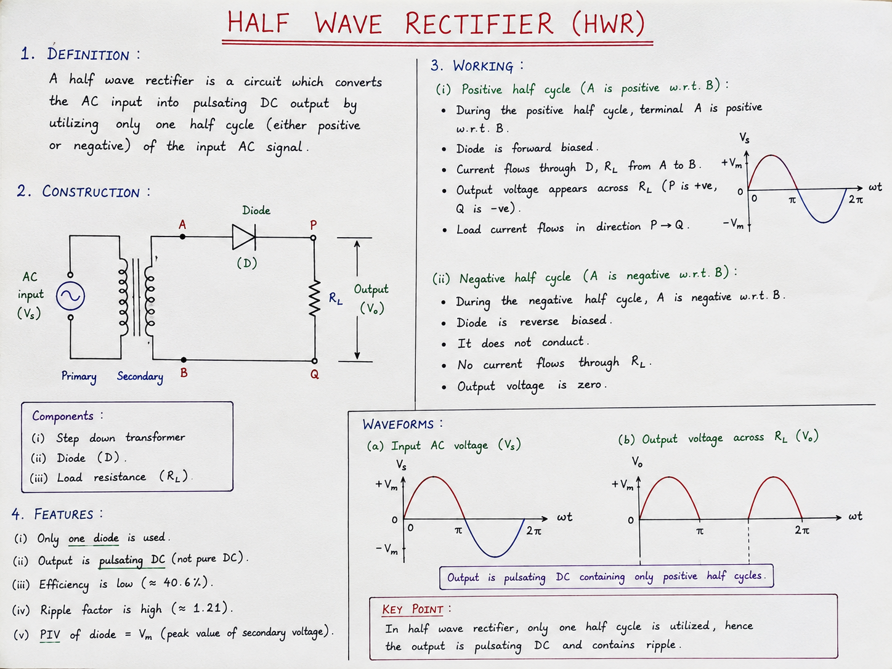

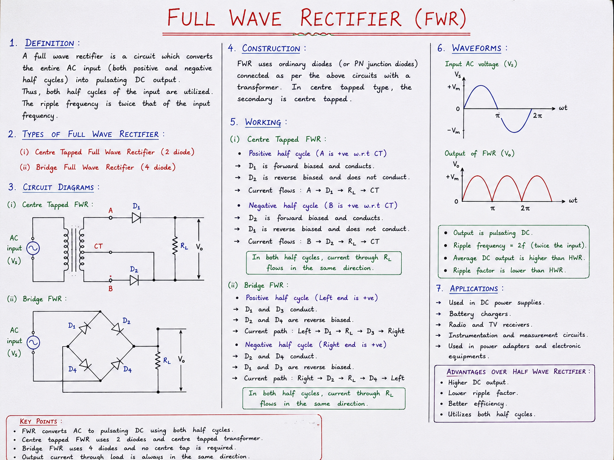


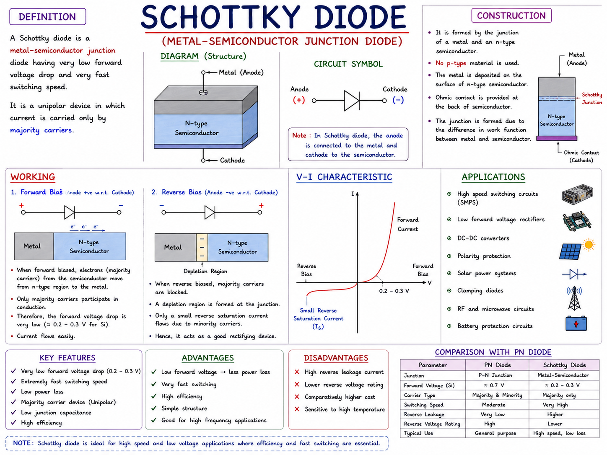

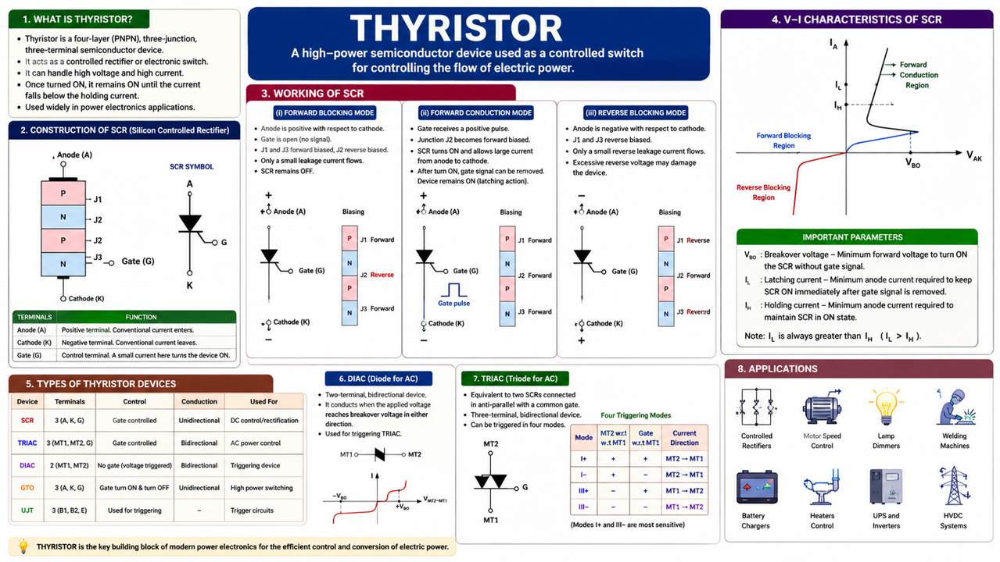
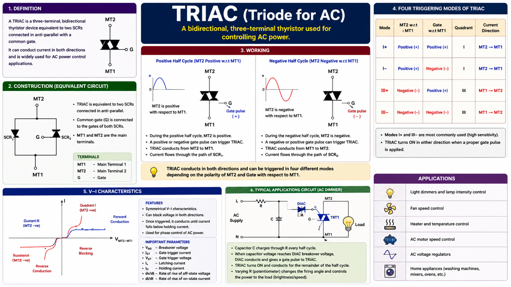
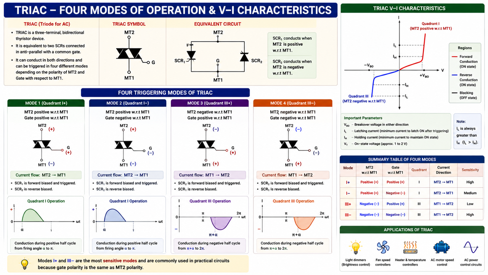
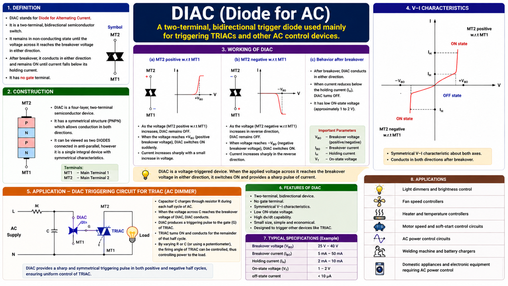